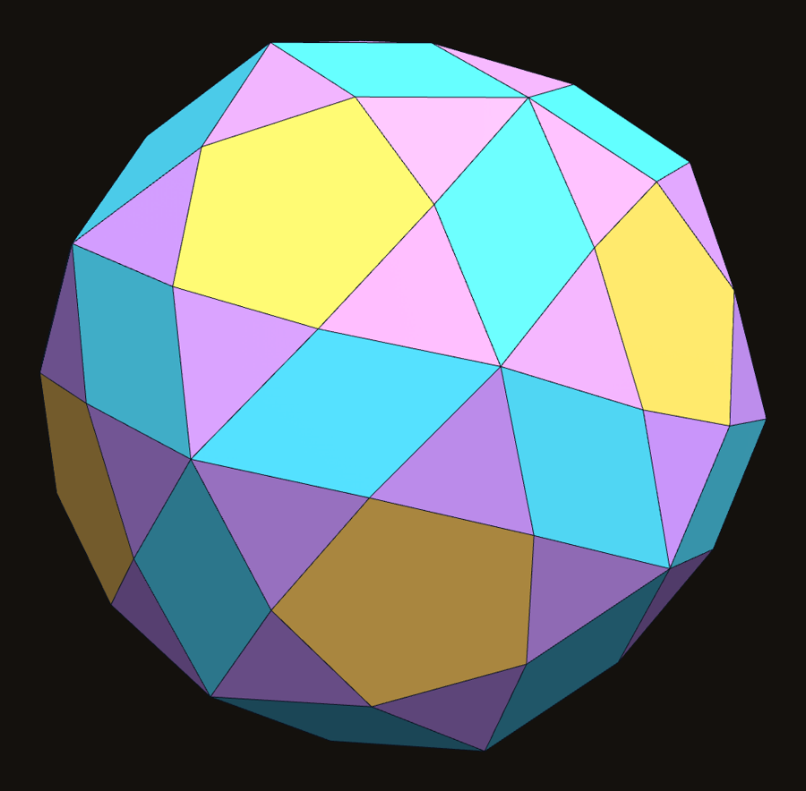
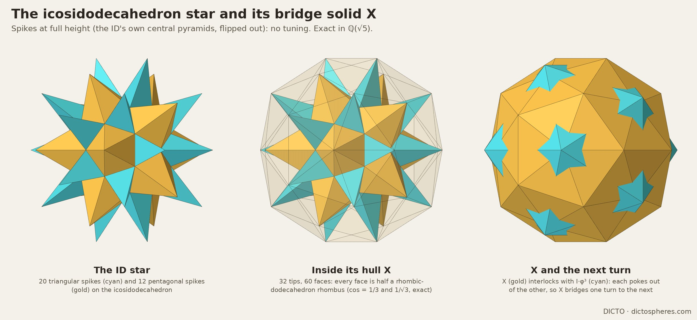
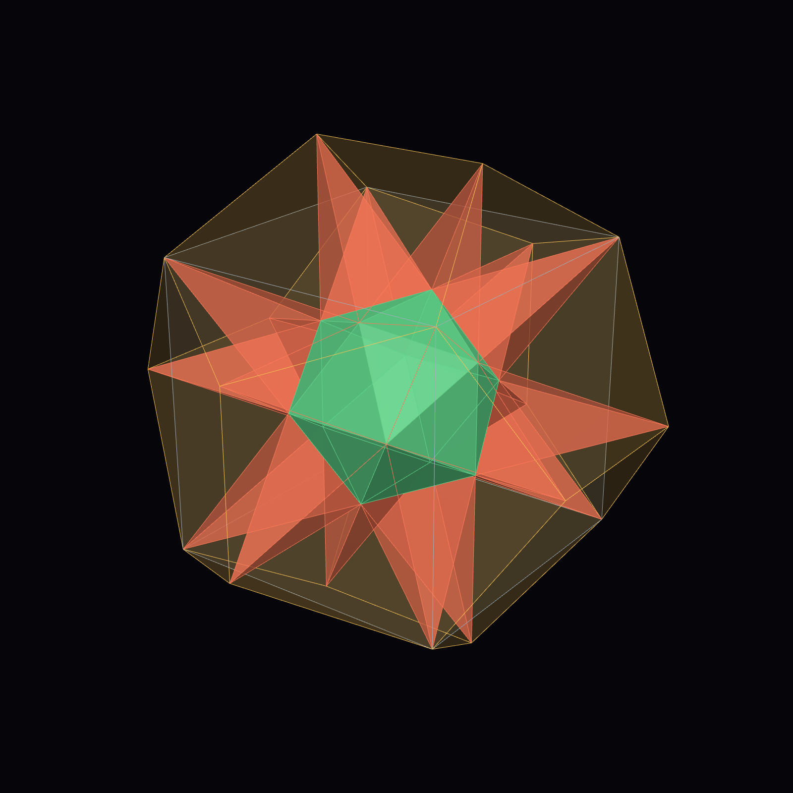
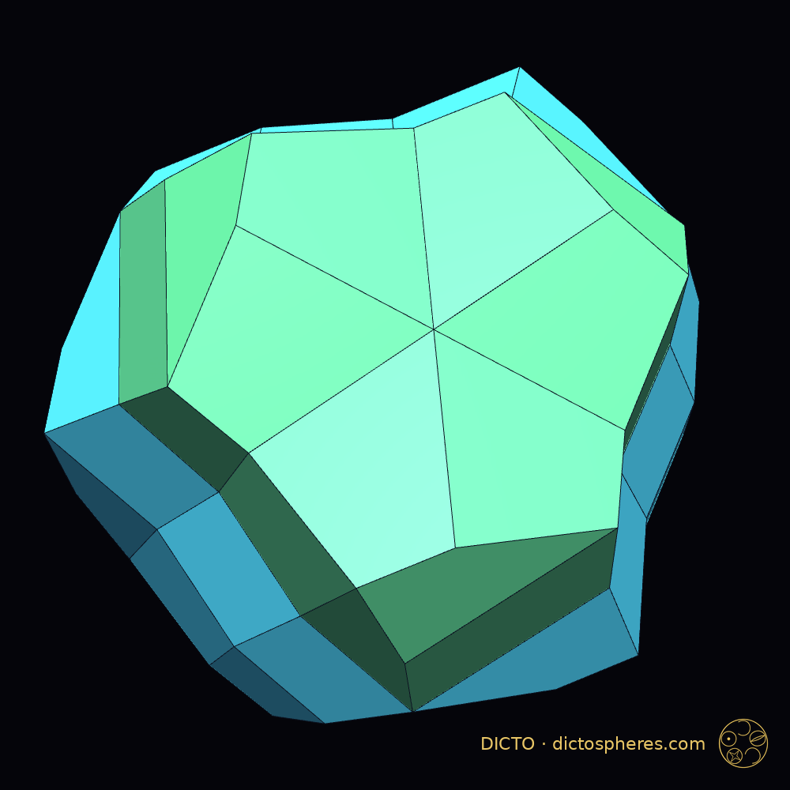
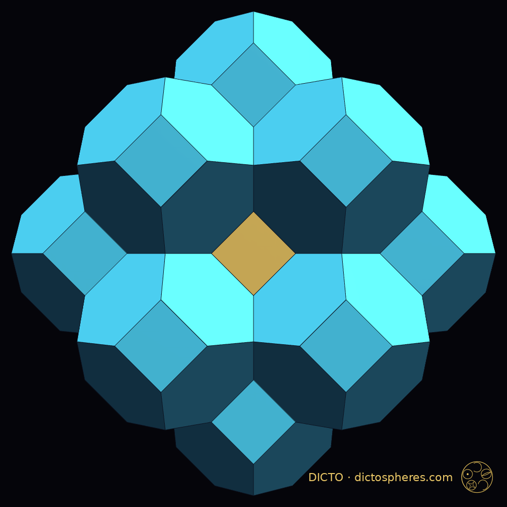
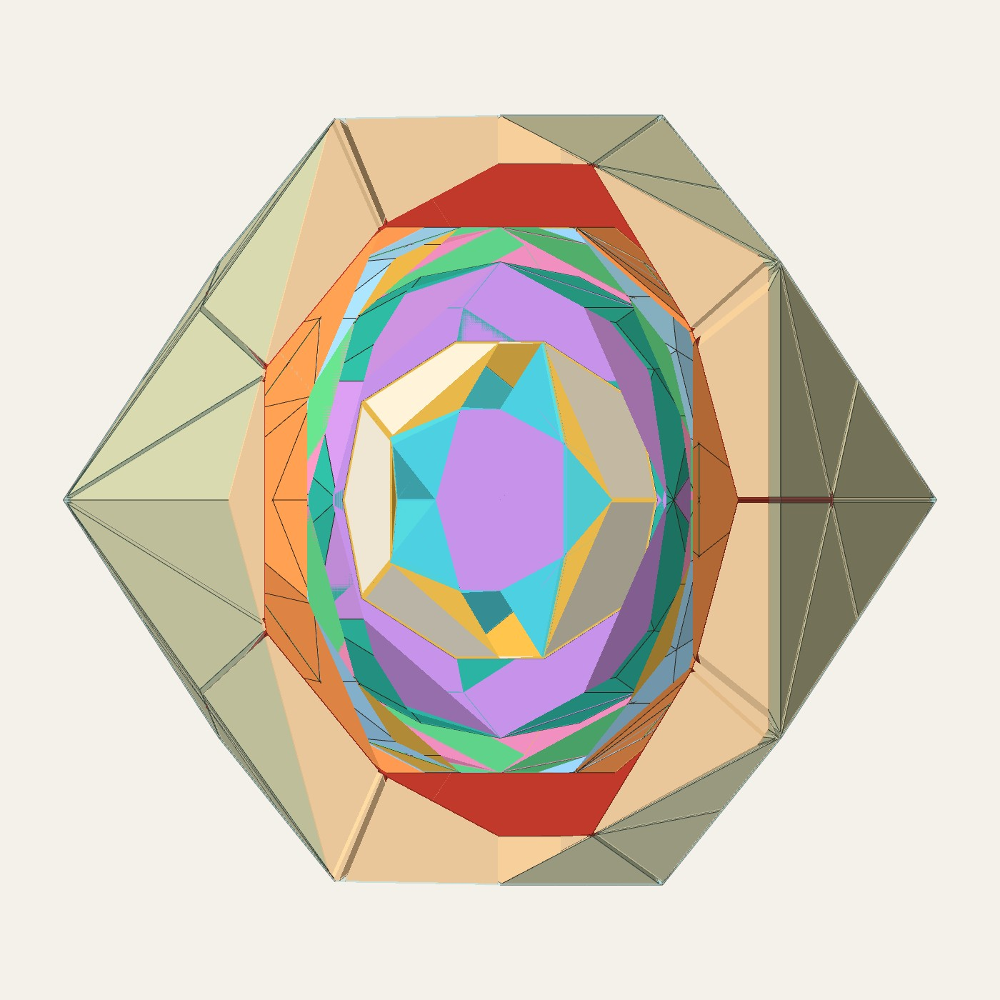
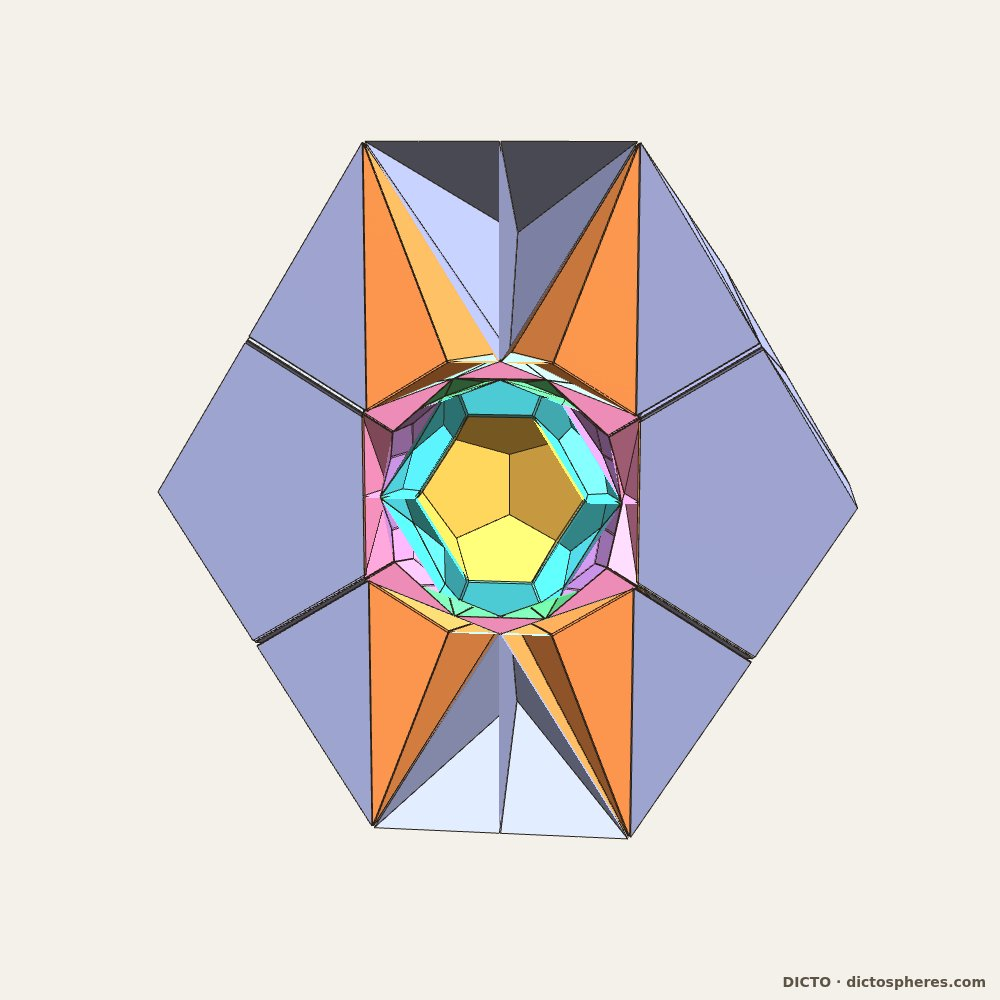
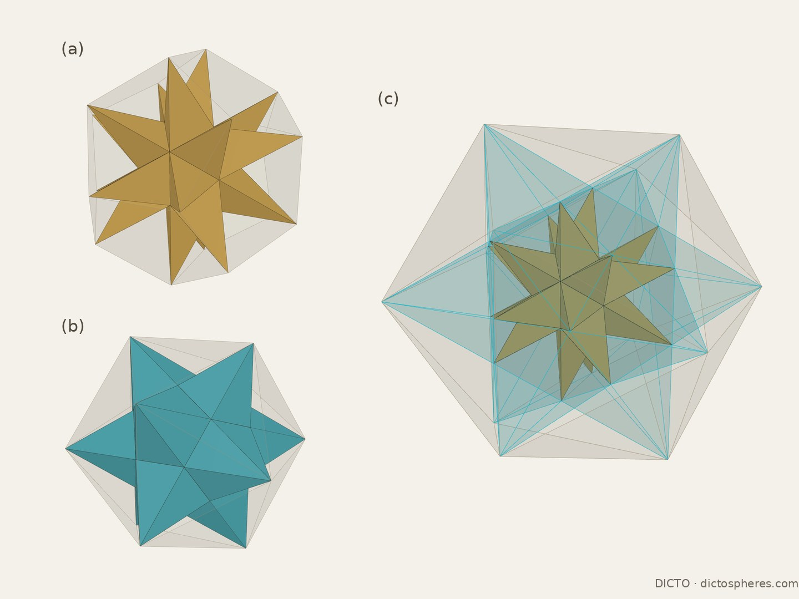

To see a World in a Grain of Sand
And a Heaven in a Wild Flower,
Hold Infinity in the palm of your hand
And Eternity in an hour.
William Blake, Auguries of Innocence
The papers, apps and data of this work are free to use; every one is open access, under the licence CC BY-SA 4.0, free to read, share and build on.
A Manifesto
The geometric works of DICTO
DICTO
artist, Osaka, Japan · contact@dictospheres.com · https://dictospheres.com
All works, findings and names are DICTO's. Computation, checking and drafting with Claude (Anthropic).
Licence CC BY-SA 4.0
Book · Volume I · Version 2.2 · 7 November 2026 · DICTO DOI: 10.5281/zenodo.23754454
Version 2.2 corrects errata 10–21, 25–32, 41, 42, 46 and 47 of The DICTO Concordance, each checked against its source paper, among them the Alice note: Alicia Boole Stott brought the word polytope into English (the German Polytop is Reinhold Hoppe's, 1882). The Concordance lists every erratum with its reason.
Volume II: The DICTOnary of Atoms: Quanta of Space II, the catalogue of all the atoms, the data work by work and the known and rediscovered shapes (DICTO DOI: 10.5281/zenodo.23966395).
For my father, Alan Baker
What this work holds
Introduction: Quanta of Space
73 works: 71 papers in six chapters, then the Kaleidohedra findings and the data set (numbers are the paper numbers on dictospheres.com)
In Volume II, The DICTOnary of Atoms: Quanta of Space II: the catalogue of all the atoms, the data work by work, and the known and rediscovered shapes
Single solids, each an exact new piece.
How pieces fill space together: exact kits, packings and lattices.
Pieces closing into nested shells round a core, each layer filled exactly.
Rules that turn one shell into the next and return, with or without end.
Every close packing from a finite catalogue of pieces, and the two tiles that build it (in full in HexOct: The Hexagonality Law).
The White and Red Queens by their shadows and slices (in full in Alicia in Wonderland: The Red & White Queens), and the golden cuts among the slices.
Order and chapters as in DICTO: Collected Geometric Works (DICTO DOI: 10.5281/zenodo.23345699), with the Stacking and Four dimensions chapters added. Works from #52 on are told in short; the books HexOct, The Golden Cycle and Alicia in Wonderland hold them in full.
DICTO
Introduction
Is space smooth all the way down, like water? Or is it built from pieces, the way a wall is built from stones? People have asked this for two and a half thousand years. This book takes the question literally. It looks for exact sets of solid pieces that fit together with no gaps, into shells, into cycles and into the whole of space.
What follows is a family tree of an idea, not a claim about physics. The pieces in this book are shapes you could build and hold. They share a question with the old thinkers and with modern science: what are the smallest pieces of space, and how do they join?
In ancient Greece, Leucippus and Democritus taught that the world is made of tiny pieces that cannot be cut, the atoms, moving through empty space. The atoms differ only in their shape, their arrangement and their position. The Roman poet Lucretius put the teaching into verse: “nothing exists per se except atoms and the void”. So the atoms were pieces. But no one said what shapes they had.
Plato gave them shapes. In his dialogue the Timaeus, the four elements are four regular solids. Fire is the tetrahedron, air the octahedron, water the icosahedron and earth the cube. All their faces are built from just two kinds of right-angled triangle. The fifth regular solid, the dodecahedron, was used “for the whole”. This was the first kit for building matter: a small set of exact pieces from which everything is put together.
Aristotle replied that if atoms are solid, they must fill space with no gaps. He wrote (On the Heavens III.8) that among solids two do this: the pyramid and the cube. He did not say which pyramid. His commentators took it to be the regular tetrahedron, which on its own leaves a small gap, and argued over it for centuries. Read as he wrote it, he was right: many pyramids fill space. Our paper #44, Aristotle's Pyramid, proves which pyramids cut from the centres of the Platonic solids do. One dimension up, even the regular tetrahedron closes, twenty round every corner of the 600-cell (#63). And #65, The Red Queen 120-cell, proves that all five of his pyramids are the cores of the regular four-dimensional solids, with exactly his proportions.
In 1596 Johannes Kepler nested the five regular solids between the spheres of the planets. In 1611, in a small book on the six-cornered snowflake, he explained the snowflake by how equal small units pack together. That became the famous question of how tightly equal balls can be stacked. Our paper #8, The Euclid–Kepler–Pacioli Cell, finds all five regular solids nested on 13 points of one repeating cell.
In 1900 Max Planck found that energy comes in small fixed amounts, quanta. In one modern theory of gravity, called loop quantum gravity, space itself does too. In 1995 Carlo Rovelli and Lee Smolin showed that in this theory area and volume come in separate steps, not smoothly. In 2011 Eugenio Bianchi, Pietro Doná and Simone Speziale showed that each small amount of volume can be read as a little solid with flat faces, fixed by the sizes and directions of its faces. Space becomes a network of such solids, joined face to face. The phrase “quanta of space” itself comes from this theory (Rovelli and Upadhya, 1998).
There is an honest difference. In that theory two neighbouring pieces share a face of the same area, but in general not of the same shape (Freidel and Speziale, 2010). Their pieces need not fit. Our pieces always fit exactly, corner to corner. Other approaches, such as causal sets, build space and time from points rather than from solids.
So this book makes no claim about physics. It shares the question and the form: what are the smallest exact pieces from which space can be built, and how do they join?
Stack oranges in a crate and each new layer sits in the hollows of the one below, in one of two ways. Repeat one choice and the stack is cubic; repeat the other and it is hexagonal; mix them in any order and it is still a perfect packing. Nature uses many of these mixtures, in metals, ice, silicon carbide and the oxides of batteries.
DICTO's Rule of Halves (#57) shows that however the layers are stacked, periodic or not, the space between the balls is shared out into pieces of only finitely many kinds, every one borrowed whole or in half from the two pure stackings. That is a finite catalogue of quanta for every close packing there is: the clearest answer this work gives to the old question. Where a cubic layer meets a hexagonal one, a piece is half one and half the other: the Janus c/h pieces stand on the threshold between the two orders. The pieces change only by swapping (the Swap Rule, #61), so every count and every volume is a straight line in one number, the share of hexagonal layers (the Hexagonality Law, #66), and real crystals obey it (#67–#74). And the catalogue closes into just two tiles, one cubic and one hexagonal, that build every stacking in any order: HexOct (#75). The Law gave the pieces; the pieces prove the law.
Read this way, the works fall into six chapters.
Atoms are single solids, each an exact new piece: the DICTO Ogdoecontahedron (OG), the Hecatodihedron, the Jewel, the Hexa, AXE, CLEO and FUJI, the Reuleaux Platonic solids, and the six DICTONIC SOLIDS (Icosaxes, Unborn Axes, Lotus Jewel Axes, Dodecaxes, Samson and Delilah). Their exact shapes are gathered in the data set DICTO Solids: Exact Geometry, where every DICTO solid has a permanent D-number. The catalogue of all the atoms, 134 new shapes of DICTO's and the known shapes the work builds with, is Volume II, The DICTOnary of Atoms: Quanta of Space II.
Bonds are about how pieces fill space together: exact kits, packings and lattices, from the Euclid–Kepler–Pacioli Cell to the OG on every stacking. The clearest cases are the three DICTONIC BONDS (golden, keyed and Delian): pairs of solids that fill space together. A DICTONIC BOND is one such pair; the chapter Bonds holds every way pieces join.
Shells are pieces closing into nested layers round a core, like the skins of an onion, each layer filled exactly: the Chain of Karma, the Spheres of Dharma, the Bodhi Seed and Theaetetus.
Cycles are rules that turn one shell into the next and come back round, with or without end: Universal PiTet, the OG family steps, Kyushindo Cores and the shells turned inside out. Shells and cycles are told in full in the book The Golden Cycle.
Stacking is the centre above: the Rule of Halves, the Swap Rule, the Hexagonality Law in real materials, and the two HexOct tiles, told in full in the book HexOct: The Hexagonality Law.
Four dimensions are seen by their shadows and slices: the 600-cell and the 120-cell, which DICTO named the White Queen and the Red Queen, told in full in the book Alicia in Wonderland: The Red & White Queens.
Some patterns repeat, like the tiles of a bathroom floor. Others never repeat, yet are perfectly ordered, like the Penrose tiling. The works in this book use the same pieces to build both.
For most of history, order in matter meant repetition. A crystal was one small cell copied without end, and five-fold symmetry was thought impossible in it. Then in 1982 Dan Shechtman found a metal alloy whose scattering pattern showed sharp five-fold symmetry. These quasicrystals, ordered but never repeating, earned him the Nobel Prize in 2011. Matter has two kinds of order, and the question became how they meet.
The pieces in this book sit on that border. One exact kit builds the repeating octet and also a crystal that never repeats, in the Fibonacci pattern (#40, The DICTO OG Family on Every Stacking). In A Fibonacci Spine (#30), five repeating packings of the OG meet round a five-fold axis. The copies that have to be taken out along that axis make exactly the Fibonacci chain, the simplest order that never repeats. The golden shells of the Spheres of Dharma (#23) repeat only by growing larger by the same golden factor at each turn. In the Fibonacci stacking (#69) the pieces of every close packing come in golden proportions, and the two HexOct tiles build repeating and never-repeating stackings alike, by the order in which they are laid. One kit, two kinds of order: the pieces themselves are the bridge.
Four things come back again and again. A small kit is enough: a handful of exact shapes builds shells and spaces without limit, and for close packing the kit is finite and complete, down to two tiles. The golden ratio appears wherever five-fold symmetry does, and it decides when shells close. It also gives every Platonic solid exactly two golden cuts, and the same golden depths return as slices of the solids of four dimensions (#88, #89). The pieces join the two kinds of order in matter, the repeating and the never-repeating. And the same pieces reach beyond our space: the five pyramids that Aristotle named and his readers argued over are the cores of the regular solids of four dimensions.
The ancients guessed that space was made of shaped pieces, and modern physics has come back to the idea. These works build such pieces exactly and test them, and each paper behind this book is checked exactly.
Sources for the introduction: Plato, Timaeus (tr. B. Jowett); Lucretius, On the Nature of Things (tr. W. E. Leonard); Aristotle, On the Heavens III.8 (tr. J. L. Stocks); J. Kepler, Mysterium Cosmographicum (1596) and Strena seu de nive sexangula (1611); D. Shechtman, I. Blech, D. Gratias, J. W. Cahn, Phys. Rev. Lett. 53 (1984) 1951; C. Rovelli, L. Smolin, Nucl. Phys. B 442 (1995) 593; L. Freidel, S. Speziale, Phys. Rev. D 82 (2010) 084040; E. Bianchi, P. Doná, S. Speziale, Phys. Rev. D 83 (2011) 044035; S. Surya, Living Rev. Relativ. 22 (2019) 5; C. Rovelli, P. Upadhya, Loop quantum gravity and quanta of space: a primer, arXiv:gr-qc/9806079 (1998). Rewritten from the essay Quanta of Space in DICTO: Collected Geometric Works (DICTO DOI: 10.5281/zenodo.23345699). Licence CC BY-SA 4.0.
Chapter 1 · Atoms · #18
A cube made of eight Jewels, its partner the Hexa-Key, and a checkerboard that fills space
You would hold a cube with 24 low roofs on its faces, pointing outwards. It looks, in the paper's words, “beautiful and solid, like carved out of wood”. Its surface shows 24 diamond-shaped windows, each the thick rhombus of Penrose's tiling.
It is made of eight DICTO Jewels, set on a two-by-two-by-two block and passing through each other inside. As one solid it holds as much as six and two-thirds Jewels.

The DICTO Jewel comes from the Euclid–Kepler–Pacioli Cell (#8). Take the cell's regular dodecahedron, which is a cube with Euclid's six roofs on it. Carve away the star-shaped stella octangulas of its six neighbouring cells. What remains keeps the whole cube and two-thirds of each roof, and its surface shows twelve Penrose rhombi, one on each edge of the cube: the windows. Jewels and stella octangulas, placed like the black and white cells of a checkerboard, fill space together.
We saw the cube of eight Jewels in the Studies world of the Kaleidohedra app. The eight overlap inside, so the cube holds six and two-thirds Jewels in volume, not eight.
No amount of shearing makes eight separate Jewels meet face to face as a cube. The Hexa exists only as eight exact Jewels overlapping. Squashing the Jewels themselves loses the windows, so that was not kept.
Hexas meet each other only window to window, two whole windows per neighbour. In the face-centred cubic pattern each Hexa has 12 neighbours. The space left between them is one single solid, which DICTO named the Hexa-Key: eight stella octangulas and twelve double roofs. Hexas and Hexa-Keys then fill space like a checkerboard, five parts to three by volume, just as Jewels and stellas do one level down. There is a pleasing symmetry: the Hexa is eight cubes with 24 roofs turned out, and the Hexa-Key is eight stellas with the same 24 roofs turned in.
The Hexa also comes apart neatly, in two ways: into 8 cubes and 24 roofs, or into 4 whole Jewels and 4 trimmed ones. Eight Hexas can cluster round a sealed-in Hexa-Key, the Jewel rhombohedron of the Kagome Hulls one level up. In a diamond network, Hexas and stellas fill space with no single Jewels left over. And nothing turns: no join in these packings can be turned and still fit.
The filling of space by stella octangulas and octahedra is known, and so are the cube, octahedron and stella octangula inside the rhombic dodecahedron. The window rhombus is one of the ten pieces of Lalvani's building system (a 1988 patent), but the Jewel is not: its walls lie in the stellas' planes, and the patent has no stella octangula or carving. We did not find a cube built from carved dodecahedra, or this block of eight, in a web search or in DICTO's reference library. As the paper says, this is not proof of novelty, and the record makes no claim of priority. The Hexa can be built in Polyhedraverse and seen in Kaleidohedra's Stella–Jewel world.
Data: Volume II, A.18 (volumes, splits, clusters and the 16 checks).
The Hexa and its names are DICTO's. Design study and checking with Claude (Anthropic) in the open-source library krp-core. First released inside Kaleidohedra v2026.10.11-octet. From paper #18, Version 2, 20 October 2026. Licence CC BY-SA 4.0.
DICTO DOI: 10.5281/zenodo.23376320
Chapter 1 · Atoms · #19
The three gap pieces of the icosahedron
You would hold three small pieces. AXE is shaped like an axe head: two equilateral triangles hinged together, with the sharp edge as the blade. CLEO is a slender pyramid, named after Cleopatra's Needle, the obelisk in London. FUJI is a hexagonal pyramid with the shape of Mount Fuji; its colour is that of the fuji flower, Japanese wisteria.
FUJI's base is a hexagon with all its angles equal, but with long and short sides taking turns. All six of its slanting edges have the same length.

Twelve balls fit snugly round one, and their twelve centres are the corners of an icosahedron. Frank showed in 1952 that this cluster of thirteen atoms is more stable than the matching pieces of ordinary crystals. But it cannot be continued through space: icosahedra placed round each other always leave gaps. Two icosahedra meeting along an edge leave a wedge of empty space on each side of it.
DICTO's cluster, the Lotus seed, places twelve icosahedra round a small one, and fills every gap with just three kinds of piece. Thirty AXE close the outer grooves and thirty more the inner ones. Twenty FUJI fill the outer corners, where three icosahedra meet. Twenty CLEO fill the inner corners round the small centre. The result, in 113 pieces, is exactly one large regular icosahedron.
We first made it in the Polyhedraverse app on 5 October 2026, while working on a dodecahedron problem, in a simpler way: a dodecahedron, an icosahedron-with-a-cap-missing (a J11) on each of its 12 faces, then 30 AXE and 20 FUJI. That is 63 pieces, and the easiest way to build the Lotus seed by hand. The paper comes with printable nets for it.
AXE and CLEO turned out to be two of the Mosseri–Sadoc tiles. Sadoc and Mosseri made those tiles to describe icosahedral order in real materials. Here the same tiles arrive on their own, as the gap pieces of a cluster built from whole icosahedra.
FUJI is new. We prove that it cannot be cut up into Mosseri–Sadoc tiles of its own size or larger. One proof uses the Dehn invariant, a quantity that cutting and gluing cannot change. The other uses the angles of FUJI's hexagonal base. Whether smaller tiles could make it is left open.
The three pieces turn up all through DICTO's work. Add 20 CLEO to a small icosahedron and you get Kepler's great stellated dodecahedron. Add 30 AXE and you get the excavated dodecahedron. Add 12 caps and you have the dodecahedron: the Dodecahedral Chain, from the icosahedron to its partner through two star solids. The Chain of Karma (#22) repeats the Lotus seed at every scale, and AXE, CLEO and FUJI stay whole at every step.
R. W. Gray described the cage of twelve icosahedra in 2002, and noted that they outline a larger one; he did not fill the gaps. AXE and CLEO are the Mosseri–Sadoc tiles. Koca and colleagues note that those tiles alone cannot grow the icosahedron past one golden step. With whole icosahedra and FUJI in their corners, the Lotus seed goes further, and the Chain of Karma carries on without end.
Data: Volume II, A.19 (the pieces' edges and volumes, the angles, the two fillings, the FUJI proofs).
The Lotus seed, the 63-piece build, UNITY, the Chain of Karma, the Stella-Corona and the names AXE, CLEO, FUJI, Hasu, Triskelion, Triskelion Hex, Inner Eye, DESHI and King of Pentacles are DICTO's. AXE and CLEO are the Mosseri–Sadoc tiles t6 and t4; the DESHI arrangement is R. W. Gray's. Computation, checking and drafting with Claude (Anthropic). From paper #19, Version 3, 20 October 2026. Licence CC BY-SA 4.0.
DICTO DOI: 10.5281/zenodo.23351291
Chapter 1 · Atoms · #20
Pyramids on truncated triangles, and a new pair that fills space
You would hold a pyramid on a six-sided base. The base is a truncated triangle: a triangle with its three corners cut off flat, so that long and short sides take turns and every angle is the same. All six slanting edges of the pyramid are equal. Three of its sides are equilateral triangles; the other three are narrower.
Now imagine a slider for the short sides. Shrink them to nothing and the pyramid is a regular tetrahedron. Let them grow to match the long sides and the pyramid sinks flat into a regular hexagon. Between them, at a golden setting, is FUJI, the gap piece of the Lotus seed (#19). That slider is the FUJI family.

The shape kept turning up. Designing the dictospheres, 3D-printed spheres with 14 PET-bottle ports, DICTO wanted sharp triangles round the ports and settled for blunted ones, truncated triangles, to keep an even margin round every port. Colouring the Lotus seed, he hoped for regular hexagons and found the same truncated triangles. His DeltaZip and B1NR sculptures use rounded triangles, the curved form of the same idea. So we asked whether FUJI belongs to a family. It does.
Each antiprism picks a member. An antiprism is a drum of triangles between two equal polygons. For each one there is exactly one family member whose base carries on flat from the antiprism's triangles. The octahedron gives the tetrahedron. The square antiprism gives a “silver” member, tied to the silver ratio. The pentagonal antiprism, the middle of the icosahedron, gives FUJI, tied to the golden ratio.
The members live in many places. FUJI's base is the golden hexagon of a construction after George Odom. The truncated tetrahedron that Damasceno, Engel and Glotzer found to fill space has another member's base as its faces. In a “breathing” pyrochlore, a crystal of large and small tetrahedra found in some chromium oxides, every hexagon is a truncated triangle; at the golden setting, every hexagon is FUJI's base. And when a cube and an octahedron are cut to the same depth, the solid's eight triangles belong to the family, with the cube's corners exactly at the pyramids' tips.
Wheels. Inspired by DICTO's DeltaZip wheels, we asked how many flat wheels can cross, each pair along a different spoke. The answer is at most three square wheels, four hexagonal ones or six ten-sided ones; five eight-sided wheels are impossible. Six wheels lead, by a roundabout route, to a sphere of 20 CLEOs and to the icosahedron cut into 20 pyramids from its centre, each one a Cleo-Icos.
A new pair that fills space. The Cleo-Icos cannot fill space on its own. But it is exactly the sharp corner of a golden rhombohedron, a slanted box whose six faces are golden rhombi. Cut that rhombohedron twice, and it falls into a Cleo-Icos at each sharp tip and a middle piece that DICTO named Antonius, four times as large. Golden rhombohedra fill space, so Cleo-Icos and Antonius fill space, two to one, face to face. The icosahedron's own pieces, with one partner, fill space. The same pieces build the rhombic hexecontahedron. We checked a patch of 2,187 pieces with no gaps or overlaps.
Much here is known and credited: the hexagon shape, the antiprism angles, the golden hexagon after Odom, the space-filling truncated tetrahedron, breathing pyrochlores, and the Cleo-Icos itself, which is Mackay's unit tetrahedron and one of the pyramids in Hypsicles' “Book XIV” of Euclid, about 150 BC. Our searches did not find the family as one object, the antiprism rule, the wheel bound, or the split of the golden rhombohedron into Cleo-Icos and Antonius; the paper reports what was searched and does not claim these are unknown. The family gives one shape and one slider to things found separately: a gap piece, a space-filler found by computer, the hexagons of magnetic crystals, and the faces of a cut cube.
Data: Volume II, A.20 (the base-angle formulas, the antiprism rule and its proof, the table of members, the wheel bound, Cleo-Icos and Antonius).
FUJI, Cleo-Icos, Antonius, the Lotus seed, the dictospheres, the DeltaZips and B1NR sculptures, the observation that the truncated triangle keeps turning up in his work, and the names are DICTO's. Computation, checking and drafting with Claude (Anthropic). From paper #20, Version 5, 20 October 2026 (text of Version 4). Licence CC BY-SA 4.0.
DICTO DOI: 10.5281/zenodo.23357896
Chapter 1 · Atoms · #28
A solid of 102 faces, found by building one stage of the Spheres of Dharma
You would hold a nearly round solid with 102 flat faces of three kinds: 12 regular pentagons, 30 rhombi and 60 slim triangles. The pentagons sit a little lower than the rest, like shallow dimples.
It is built on the truncated icosahedron, with a low six-sided pyramid, a Shield, standing on each of its 20 hexagons. The Shields are raised to just the height where the triangles of two neighbouring Shields lie flat in one plane and merge into a rhombus. Its edges fold at only two angles.

The Spheres of Dharma (#23) grow an icosahedron layer by layer, through the icosidodecahedron, the dodecahedron, the truncated icosahedron and the rhombic triacontahedron, back to an icosahedron a golden step larger. In Capturing the In-betweens (#27) each closed stage of that growth is taken as one solid. Stage 7, the truncated icosahedron with a Shield on every hexagon, turned out to be convex, with fewer faces than its pieces suggest: 102. It was found by building it.
At the special height, the 60 triangles across the edges where two hexagons meet pair up into 30 rhombi. The 60 triangles next to the pentagons stay triangles. The 20 tips of the Shields then sit exactly on the corners of a regular dodecahedron.
The rhombi and the triangles, 90 faces in all, touch one sphere. The 12 pentagons lie a little inside it, so the solid has no sphere that touches every face. An earlier paper of ours said all 102 faces touch one sphere; that was wrong, and it has been corrected.
What the solid is, exactly: the 20 tips of the Shields are the 20 six-fold corners of a known solid, the pentakis dodecahedron, the partner of the truncated icosahedron. So the Hecatodihedron is a known solid, the joined truncated icosahedron, with its 12 five-fold corners cut off flat at the pentagons: an unnamed solid derived from a known one. Its partner, made by turning it inside out, is the DICTO Ogdoecontahedron (#31). The two interlock into one compound of 182 faces, which DICTO named the DICTO Hecatogdoecontahedron (#34a).
Its pattern of faces is close to Conway's hexakis truncated icosahedron, which has 132 faces; ours is that solid flattened, with 30 pairs of triangles merged. It is not an Archimedean, Catalan or Johnson solid. We searched Conway's notation, the Johnson solids and their near misses, MathWorld, the Polytope Wiki and McCooey's catalogue, and did not find it named. That is a report of where we looked, not a claim that the solid is unknown. The name is DICTO's: hecatodi- for its 102 faces, from the Greek for one hundred and two, as in the hecatonicosachoron; truncated-icosahedral for the solid it grows from. It can be opened in Polyhedraverse (DICTO Transitional Shells) and seen in the DICTO-TIC world.
Data: Volume II, A.28 (faces, distances, angles, volume, the exact relation to the joined truncated icosahedron, the searches).
The solid is a stage of DICTO's Spheres of Dharma, found by building it, and the name is DICTO's. Computation and checking with Claude (Anthropic). From paper #28, Version 3, 20 October 2026. Licence CC BY-SA 4.0.
DICTO DOI: 10.5281/zenodo.23360857
Chapter 1 · Atoms · #31
A solid of eighty faces, found by turning a set of nested shells inside out
You would hold a nearly round solid with 80 flat faces: 20 regular hexagons and 60 kites. Everywhere you look, kites crowd round the hexagons. At 12 points, five kites meet in a point that stands just a little proud of the rest.
Roll it in your hand and it looks the same from many sides. It has the full symmetry of the icosahedron, the twenty-sided regular solid. Its 102 corners almost all lie on one sphere: 90 of them sit exactly on it, and only the 12 five-kite points sit just outside. The faces meet along edges of only two lengths, and they fold at only two angles, which are almost the same. Each kite has two long sides, the same length as the hexagon's sides, and two shorter ones. DICTO named it for its eighty faces: Ogdoecontahedron, from the Greek words for “eighty” and “face”. For short it is the OG.


It began with an earlier work, the Spheres of Dharma (#23). There, six solids sit inside each other like Russian dolls. The gap between each doll and the next is filled exactly by a few repeated pieces, and the nesting repeats without end. Part-way through one layer, the caps on its hexagons close into a solid of their own, the DICTO Truncated-Icosahedral Hecatodihedron (#28).
On 13 October 2026 it was DICTO's idea to turn the whole nesting inside out. Simply turning each layer's pieces over does not work: no layer closes into a shell. What does work is an old trick of geometry. Take one sphere round the common centre and use it like a mirror: every flat face becomes a corner, and every corner becomes a flat face. Each solid turns into its partner, and the order of the nesting reverses, so that the inside goes outside.
We did this to all seven solids: the six of the nesting and the Hecatodihedron between them. Six came out as solids that were already known. One did not. The Hecatodihedron turned into this new solid, the Ogdoecontahedron.
The OG has a simple description once it is found. Take a known solid, the pentakis dodecahedron. Find its 20 corners where six faces meet, and slice each one off flat. Each slice leaves a regular hexagon, and what remains of the old faces are the kites. Adding a cap on one side of the mirror is cutting a corner on the other: the Hecatodihedron adds a low pyramid to each hexagon of its parent, and the OG cuts a corner instead.
In the reversed nesting the OG sits snugly between two classical solids. Its hexagons lie in the faces of the icosidodecahedron inside it, and its kites lie in the faces of the pentakis dodecahedron around it.
It was DICTO's idea, too, to join copies of the OG hexagon to hexagon. Join each copy to four others, through four hexagons that point like the corners of a tetrahedron, and the copies form a diamond network. The joints themselves sit on a pattern of corner-sharing tetrahedra, the pyrochlore lattice. A second network fits into the empty places of the first, touching it only on hexagons. Together the two make one tidy stack: every copy faces the same way and touches eight neighbours, through the eight hexagons that point to the corners of a cube. This stack fills 77.43 per cent of space. That is more than the tightest possible stack of equal balls, like oranges on a market stall, which fills 74.05 per cent. A computer search found a slightly denser regular stacking, but it is not proved to be the densest.
The OG joins the regular hexagon, at home in repeating patterns, to five-fold symmetry, the symmetry of quasicrystals. We tested whether it is a piece of the standard icosahedral quasicrystal. It is not. But it can be stacked in five such ways, and where the five stacks meet round a five-fold axis, the copies that must be taken out, with the copy in the middle, form exactly the Fibonacci chain near the centre. That is the subject of A Fibonacci Spine (#30).
Much of this is old and is credited in the paper: turning solids inside out about a sphere, the pentakis dodecahedron and the cutting of its corners, the diamond and pyrochlore lattices, and the stacking of equal balls. Even the OG's pattern of faces, which face meets which, is known: it can be written in the notation of the Antiprism software. What we did not find, in DICTO's reference library, in McCooey's online catalogue of 553 solids or in web searches, is the solid itself, with these regular hexagons and these kites, or its exact hexagon-joined stacks. So the OG is an unnamed solid derived from a known one. Its name is DICTO's; the solid with these faces, and its stacks, were not found in the sources checked.
Data: Volume II, A.31 (counts, exact edge lengths, angles, radii and volume; the stacks and their density; the quasicrystal tests; the sources searched).
The Hecatodihedron, the idea of turning the Spheres of Dharma inside out, the name Ogdoecontahedron and the idea of joining copies on their hexagons into pyrochlore networks are DICTO's. Computation, exact arithmetic and renders with Claude (Anthropic). From paper #31, Version 4, 20 October 2026. Licence CC BY-SA 4.0.
DICTO DOI: 10.5281/zenodo.23404688
Chapter 1 · Atoms · #31a
The Ogdoecontahedron's companion, cut along its joints
You would hold a faceted, gem-like solid with 48 corners and 50 faces: 6 hexagons and 24 four-sided faces, all set in golden planes, and 20 triangles. Eight of the triangles are special. They are the flat places where it meets its neighbours.
It is not as round as the icosahedral solids around it. Its cut keeps only 24 of their symmetries, the ones they share with a cube. (Geometers call this pyritohedral, after the crystals of pyrite.)

The DICTO Ogdoecontahedron (#31) packs in a body-centred cubic arrangement, each copy joined to eight neighbours on its hexagons. Golden adaptor pieces fit round each copy, and together they have a solid outline, the OG's companion. In DICTO's words, it was “a free gift from the way the adapters sat on the OCD”. Cut the companion along the eight joints, and you have the DICTO OCD Stella.
It packs. Copies of the OCD Stella meet face to face across all eight joints and fill 87.12 per cent of space.
It makes a seed. Set twelve OCD Stellas round a small one, and they fill a larger OCD Stella exactly, the same pattern as the Bodhi Seed (#24), even though the OCD Stella is less symmetric.
It makes crystals. The OG's packing splits into two diamond networks. It was DICTO's idea to put a partner on the second network while the OCD Stellas stay on the first: the pyrochlore arrangement, in which both networks of sites are filled. With icosahedra as partners, every solid meets its eight neighbours face to face. It was DICTO's idea, too, to cut the remaining gap into pieces, and it falls into exactly four kinds of convex piece. With regular octahedra as partners, DICTO's next idea, each octahedron's six tips nest in notches in the OCD Stellas, and the crystal fills 96.33 per cent of space. With octahedra on only a quarter of the sites, as in rock salt, it fills 91.72 per cent.
The Atom 13. DICTO's idea again: twelve OCD Stellas round a central one, each pushed out until it touches the centre. They meet the centre flat and never touch each other. Twenty icosahedra fit into the gaps between them.
The companion's pattern of faces is known (the chamfered icosahedron), and a different golden space-filler cut from the rhombic triacontahedron on the same kind of lattice is known (Kabai's 54-faced space-filling polyhedron). That one fills all of space; the OCD Stella is a different solid and fills 87.12 per cent. Crystals of two kinds of hard solids, such as tetrahedra with octahedra, are also known. We did not find the OCD Stella, its packing, its seed, its crystals, the gap pieces, the notched OCD Stella or the Atom 13 in the sources checked, which included 64 texts of DICTO's reference library searched in full. You can see the crystals in Kaleidohedra (3D+ → OCD Stella Crystals).
Data: Volume II, A.31a (the solid's exact volume and faces, the seed, the four crystals and their fills, the gap pieces, the Atom 13).
The companion, the stella cut, the seed, the name, the partners on the second network (icosahedra and octahedra), the pyrochlore arrangement, cutting the gap into pieces and the Atom 13 are DICTO's; the exact computations and the text were done with Claude (Anthropic). From paper #31a, Version 3, 20 October 2026. Licence CC BY-SA 4.0.
DICTO DOI: 10.5281/zenodo.23430870
Chapter 1 · Atoms · #34a
Two partner solids locked into one
You would hold two solids passing through each other, like the two tetrahedra of a star-shaped stella octangula. One is the DICTO Hecatodihedron (#28), with 102 faces. The other is the DICTO Ogdoecontahedron (#31), with 80 faces. Corners of each poke out through the faces of the other.
Together they have 182 faces and 182 corners. DICTO named the pair by merging the two names: the Hecatogdoecontahedron, 102 and 80 together.

The two solids are partners: turn one inside out about a sphere, and you get the other. Here the sphere is the one that touches the middle of every edge of the truncated icosahedron. At that size the two solids interlock exactly. The Ogdoecontahedron's 90 corners on that sphere sit exactly at the 90 edge midpoints of the truncated icosahedron. No corner of either solid lies inside the other.
Because the two are partners, the pair is its own partner: turned inside out, the compound swaps its two solids and stays the same.
The part the two solids share, their common core, is the rectified truncated icosahedron. The outline that wraps them both, the hull, is the joined truncated icosahedron, also called the rhombic enneacontahedron. These are exactly the core and hull of a classical pair, the truncated icosahedron with its partner the pentakis dodecahedron. So the new pair shares out the space of a classical compound in a new way. It is like the octahedron and cube, which are the core and hull of the stella octangula.
In Progenitors (#34), the core and the hull become stations of a golden cycle, so that cycle holds the cores and hulls of two partner compounds: the classical icosahedron with dodecahedron, and this one.
Compounds of a solid with its partner are known. So are the classical truncated icosahedron–pentakis dodecahedron compound, the rectified truncated icosahedron and the rhombic enneacontahedron. We claim only the pairing and the name, not the core or the hull. The compound of these two solids was not found in the sources checked, and the name returns no search results. It can be seen in Kaleidohedra (3D+ → Vajrayana, and Multi-shell chains).
Data: Volume II, A.34a (the counts of the two solids, the compound, its core and hull).
The pairing and the name are DICTO's; the exact computations and the text were done with Claude (Anthropic). The compound was first described in Version 2 of the Hecatodihedron paper (#28). From paper #34a, Version 2, 20 October 2026. Licence CC BY-SA 4.0.
DICTO DOI: 10.5281/zenodo.23430868
Chapter 1 · Atoms · #35a
The solid in the last gap of the golden cycle
You would hold a solid of 60 identical triangles, slightly pointed at 12 places where five triangles meet and blunter at 20 places where six meet. It has 32 corners and 90 edges. A ball could sit inside it touching all 60 faces at once.
It is made by wrapping one skin round two classical solids at once: a regular icosahedron, and a dodecahedron whose corners sit over the icosahedron's faces. How big the dodecahedron is decides the shape. DICTO's solid is one exact size in that range. Its name means “the in-between solid with sixty faces”, from the Greek metaxý, in between.

The Spheres of Dharma (#23) nest icosahedral shells in a cycle that repeats at a golden step. Progenitors (#34) set the DICTO Ogdoecontahedron into it, and Vajrayana (#35) took up its loose steps. In one of them, from the rhombic triacontahedron to the next icosahedron, the triacontahedron reaches only part of the way. It was DICTO's idea that one more solid should fit there. None of the other convex icosahedral solids tested touches both neighbours. This one does.
The Metaxyhexecontahedron fits the gap exactly. Its 12 five-fold corners are the triacontahedron's own corners, and its 20 three-fold corners sit exactly on the centres of the next icosahedron's faces. It touches both sides.
Better still, each of the two layers it makes is filled by a single kind of piece: 30 identical pieces between the triacontahedron and the new solid, and 60 identical pieces between the new solid and the next icosahedron. Its partner, made by turning it inside out, closes the matching step in the inside-out version of the cycle.
It belongs to a family: all the skins round a dodecahedron and an icosahedron in this position, as the dodecahedron grows. That family holds the Catalan pentakis dodecahedron, the DICTO Palintriacontahedron (#35b) and the DICTO Metaxyhexecontahedron. One curiosity is noted without explanation: the size ratio that defines it is also the exact gain per round of the tightest cycle in Progenitors.
The family is known: the Polytope Wiki gives its range, and MathWorld and McCooey give the Catalan member. Not found in the sources checked: this member as a named or distinguished solid, or its size ratio as distinguished. Its number matches no sequence in the OEIS, and the name returns no search results. It can be seen in Kaleidohedra (3D+ → Vajrayana).
Data: Volume II, A.35a (the closed form, edges, radii, insphere, volume, the cycle step).
The idea that one more solid fits the last gap of the cycle, and the name, are DICTO's; the exact computations and the text were done with Claude (Anthropic). From paper #35a, Version 3, 20 October 2026. Licence CC BY-SA 4.0.
DICTO DOI: 10.5281/zenodo.23430864
Chapter 1 · Atoms · #35b
The rhombic triacontahedron turned inside out
You would hold a solid of 60 triangles with 32 corners: 12 where five triangles meet and 20 where six meet. Each triangle is exactly half of a rhombus from Kepler's rhombic dodecahedron.
Its name, from the Greek pálin, “back”, says what it is: the rhombic triacontahedron turned back on itself. It points along the same 32 directions as the triacontahedron, but where that solid's corners are far out, this one's are near in, and the other way round.

In the twelve-station golden cycle of Vajrayana (#35), the icosidodecahedron is the shell where the cycle's two progenitors meet. An icosidodecahedron can be cut into 32 pyramids from its centre, one over each face. DICTO flipped those pyramids outward, at their full height, rather than shortening them. In his words: “shortening feels like cheating; one more solid is needed”. The skin round the 32 tips is the Palintriacontahedron.
It is the triacontahedron turned inside out: the same 32 axes, with the ratio of its two kinds of corner distance reversed. It is also a member of the same family as the Metaxyhexecontahedron (#35a): the skins round a dodecahedron and an icosahedron. Its place in that family lies between the Catalan pentakis dodecahedron and the Metaxyhexecontahedron.
It reaches across the cycle. Measured by computer, it lies inside the next turn's dodecahedron, and almost all of it, 99.46 per cent, lies inside the next icosahedron's Cleo star. So it bridges one turn of the golden cycle to the next. A small coincidence of numbers: the first stellation of the icosahedron puts its tips at the same ratio that defines this solid.
The family and its range are known (the Polytope Wiki), and so are the rhombic triacontahedron and the icosidodecahedron's central pyramids. Not found in the sources checked: this member as a named or distinguished solid, or its size ratio as distinguished. The name returns no search results.
Data: Volume II, A.35b (the closed form, the face angles, edges, radii, insphere and volume).
Flipping the icosidodecahedron's own central pyramids out at full height, and the name, are DICTO's; the exact computations and the text were done with Claude (Anthropic). From paper #35b, Version 2, 20 October 2026. Licence CC BY-SA 4.0.
DICTO DOI: 10.5281/zenodo.23430866
Chapter 1 · Atoms · #41
Euclid's dodecahedron carved by its neighbours' stars
You would hold a cut gem with 60 faces: twelve diamond-shaped windows and 48 small triangles. Each window is a thick Penrose rhombus, the fatter of the two tiles of Penrose's famous never-repeating pattern, with corners of 108° and 72°. On each of its six sides there is a small dimple.
Underneath it is a cube. The windows lie across the cube's twelve edges, and the triangles are the walls where it was carved.

Euclid built the regular dodecahedron by setting a roof on each face of a cube. Now place cubes side by side to fill space, like a checkerboard in three dimensions. Put Euclid's dodecahedron on the white cubes. On the black cubes put the star made of two interlocking tetrahedra, Kepler's stella octangula. Each roof of a dodecahedron reaches into a black cube, and the star there carves part of it away. What is left is the DICTO Jewel: the cube and its six carved roofs.
Jewels and stars fill space. Jewels on the white cubes and stella octangulas on the black cubes fill space exactly, three parts to one by volume, in the pattern of table salt. This was first checked by sampling points; here it is proved exactly. Each black cube is precisely its star plus the six carved roofs pushed into it by its neighbours.
Clusters named as solids. DICTO's clusters of Jewels become single solids with his names. The Jewel-Tetra is four Jewels that all touch, window to window. The Jewel-Octa is six Jewels round a black cube, with that cube's star sealed in the hole between them, filling it exactly. The Jewel-Rhombi is eight Jewels on the corners of a slanted box, again with a star sealed inside.
How they fill space. Jewels make up only three-quarters of space, so no group of Jewels alone can fill it: stars must come too. Each of the three clusters fills space with copies of itself and loose stars, and we found every regular way of doing so. Together, Jewel-Tetras and Jewel-Octas sit exactly where the tetrahedra and octahedra of the octet truss sit, though as overlapping solids, not as a tiling.
The Hexa, proved. The DICTO Hexa and Hexa-Key of paper #18, and their five-to-three filling, are proved exactly here. The same pattern repeats one level up: a cube with roofs added is a Jewel and with roofs taken away a star; a block of eight with roofs added is a Hexa and with roofs taken away a Hexa-Key.
Twins. As a single solid, the Jewel twins like the DICTO Ogdoecontahedron. Its packing does not twin across a slanting mirror, and the paper gives the simple reason: that mirror does not keep the grid of cubes.
The parts are classical: the roofed cube is Euclid's, the stella octangula Kepler's, the thick rhombus Penrose's, the arrangement that of table salt. The Jewel itself, its lattice and the clusters were first published by DICTO in the Kaleidohedra app and in Kagome Hulls (#17); the Hexa in #18. New here are the exact proofs, the three cluster solids and their face counts, every lattice tiling of the three with loose stars, the octet pattern with its limit, and the exact reason the packing does not twin. Lalvani's 1988 patent builds structures from pieces whose edges all lie on certain icosahedral axes; only the Jewel's window edges do, so it falls outside that condition. We did not find the Jewel, its clusters, the Hexa or the Hexa-Key outside DICTO's own records, in 80 library sources searched in full and in web searches.
Data: Volume II, A.41 (the volumes, corners and faces, the tiling proof, the cluster counts and lattices, the Hexa proof, the twin).
The Jewel, its stella-octangula counterpart, its name, its clusters (and the Jewel-Tetra, Jewel-Octa and Jewel-Rhombi as single solids, and their names), the Hexa, the Hexa-Key and their names are DICTO's. Computation, exact proofs and drafting with Claude (Anthropic). From paper #41, Version 1, 20 October 2026. Licence CC BY-SA 4.0.
DICTO DOI: 10.5281/zenodo.23496353
Chapter 1 · Atoms · #45
Rounded bodies made where balls on the corners of a Platonic solid overlap
You would hold a smooth, rounded body with curved faces meeting along curved edges, like a pebble that still remembers the solid it came from. Each face is a piece of the surface of one ball.
Oddly, each body looks like the partner of the solid it was made from. Balls on the corners of a cube make a body that looks like an octahedron, and balls on an octahedron make one that looks like a cube. So DICTO named them by their look: the Reuleaux octahedron (balls on the cube), the Reuleaux cube (on the octahedron), the Reuleaux icosahedron (on the dodecahedron) and the Reuleaux dodecahedron (on the icosahedron).

It was DICTO's idea. Put a ball on every corner of a Platonic solid, each ball just large enough to reach the farthest corner. The space that all the balls share is a rounded body. On the tetrahedron this is the famous Reuleaux tetrahedron. Building the same body on all five Platonic solids, as one family, is DICTO's idea, and the other four did not appear in the sources we checked.
The main theorem says how thick these bodies are.
Never thinner than the solid is wide. A rounded body of the same thickness in every direction fits inside each one, and nothing can be thinner than a body it holds. Measured between two opposite corners, the thickness is exactly the solid's width.
Through a face, exactly. Measured straight through the middle of a face, the thickness is exactly a number we can write down. By symmetry the outermost point lies on that line, and it can reach only as far as the farthest corner's ball allows.
Partners agree. A solid and its partner, the cube and the octahedron, or the dodecahedron and the icosahedron, give bodies exactly as thick as each other through their faces.
The tetrahedron follows its own rule, and the classical Reuleaux tetrahedron comes out right: our computed volume agrees with the known formula. Despite their names, the four new bodies are not Reuleaux polyhedra in the strict mathematical sense: each corner lies on only one other ball's surface. They are “ball polyhedra”.
We believe the line through a face is also the thickest direction of all. The computer agrees to twelve digits, over 3,000 directions, but it is not yet proved. That is left as a conjecture.
Colours. The faces of each body meet just as the faces of the partner solid do. So the fewest colours that keep neighbouring faces apart are 4, 2, 3, 3 and 4, the numbers DICTO read from the look.
The Reuleaux tetrahedron and its volume are known, as are ball polyhedra in general, Reuleaux polyhedra and Meissner's solids. The three library papers on these bodies use only the regular tetrahedron. In the 81 library sources searched in full we did not find the bodies on the other four Platonic solids or their widths. One paper on the subject, Sallee's, is in the library as a link only and was not read.
Data: Volume II, A.45 (the theorem, the exact widths, the proof sketch, the table of the five bodies, the checks).
The construction (a ball on every corner of a Platonic solid, radius the solid's diameter) and the names by look are DICTO's idea; computation, proofs and drafting with Claude (Anthropic). From paper #45, Version 2, 22 October 2026. Licence CC BY-SA 4.0.
DICTO DOI: 10.5281/zenodo.23529499
Chapter 1 · Atoms · #49
Slide a solid one edge-length, and every edge stays the same
You would hold a long, faceted solid: a regular dodecahedron that has been stretched. Its twelve pentagons are all still there, at the two ends, and between them runs a belt of ten diamond-shaped faces. Every edge, on the pentagons and on the belt alike, has the same length.
Looked at end on, its outline is a ten-sided polygon. Looked at from the side, it shows the long hexagon where it all began.

In paper #47, dodecahedra sit on every other cube of a grid. Looking into that block in the Kaleidohedra app, DICTO saw a void, a long six-sided space, with two dodecahedra overlapping it on either side. It was his idea to make a dodecahedron variant to fit it. Taken together, the void and the two overlaps make one solid: the space a dodecahedron passes through as it slides from one of the two places to the other. DICTO had found a first member of this family earlier, also from overlapping dodecahedra: the stretched dodecahedron, published as finding F11.
The theorem. Take any solid whose edges are all the same length, such as a dodecahedron. Slide it one edge-length in a straight line, in any direction except along one of its own edges. Every edge of the shape it sweeps comes out one edge-length long. The reason is short: every edge of the new shape is either one of the solid's own edges, moved, or a copy of the slide itself, and both are one edge-length long.
What happens to the faces is easy to picture. The faces at the two ends stay just as they were. A face that lies along the slide gets longer and gains two sides. And round the middle grows a belt of diamonds, one for each edge on the solid's outline.
Special directions. Sliding along an axis of the dodecahedron's own symmetry gives the cleanest shapes. Slide through two opposite pentagons, and the belt has ten diamonds, all alike. The face-diagonal slide keeps all twelve pentagons.
Equal-edged and telescoped. DICTO names the whole family the DICTO stretched solids: equal-edged when the stretch is one edge, telescoped at any other length. The faces keep their kinds; only the belt grows.
Three and four caps. Instead of sliding along a line, put a dodecahedron at each corner of a triangle or a tetrahedron and wrap them together. Again every edge is equal, and equilateral triangles appear among the faces. DICTO also wondered whether turning one end might make the belt into triangles. It cannot: the rim zigzags, and the best band of triangles is still a third of an edge off. Three and four caps give the triangles instead.
Every equal-edged solid. The theorem works for all the Platonic solids. Stretch the tetrahedron and octahedron and famous shapes appear: the cuboctahedron, the truncated tetrahedron and three Johnson solids, a good sign that the stretch is a natural operation. The stretched icosahedra form a second, new-looking family.
Make your own. Printable nets come with the paper, and a telescoping model in three parts that slides from the short shape to the long one.
The method is old: sliding a solid along a line is a standard construction (the Minkowski sum), and how faces behave under it is known in general. Hart and Picciotto built triangle-and-rhombus solids the same way, without pentagons, and for zonohedra the stretch of a zone is classical (Grünbaum, after Fedorov). We did not find the dodecahedron swept along a face diagonal, a body diagonal or a five-fold axis, nor the three- and four-cap forms, named or described. Since the construction is simple, they may exist somewhere unnamed; we present them as DICTO's family on that understanding. The stretch of the thirteen Archimedean solids is left for later.
Data: Volume II, A.49 (the theorem in full, the proof, the tables of directions and of the icosahedron family, the checks).
The stretched dodecahedron (F11), the long hexagon seen in the dodecahedron layer, the three- and four-cap forms and the telescoping model are DICTO's ideas; computation, proofs and drafting with Claude (Anthropic). From paper #49, Version 2, 22 October 2026. Licence CC BY-SA 4.0.
DICTO DOI: 10.5281/zenodo.23566671
Chapter 1 · Atoms · #88
DICTO observed that one face runs through his recent solids: the truncated triangle, a hexagon with all six angles 120° and its sides alternating between two lengths. Among the solids of the data set DICTO Solids, every hexagon with three-fold symmetry is one, and in three single solids, Icosaxes, Unborn Axes and White Knight, its two sides are exactly in the golden ratio φ: these are the DICTO-GTT-Solids. Cut every corner of a Platonic solid by the same amount so that each face becomes a golden truncated polygon, and there are exactly two ways for each solid, ten solids in all: the DICTO-Kepler golden truncations, the Greater and Lesser Golden Cut solids. At the octahedron they are DICTO's Icosaxes and Unborn Axes, the pair that fills space together (#48); the other eight are new within the checks of #88, and stand in the catalogue of Volume II. The icosahedral and octahedral pairs are slices of the 120-cell and the 24-cell: the Greater Golden Cut solid at 1/φ² and the Lesser at 1/φ of the way from the centre to a cell, either side of the Archimedean slice at one half. Names by DICTO.
DICTO DOI 10.5281/zenodo.23896439
The catalogue of all the atoms, which closed this chapter up to version 1.4, is now a book of its own: Volume II, The DICTOnary of Atoms. It lists every named shape of the work, one quantum of space each: DICTO's 134 new shapes with their D-numbers, his 37 new clusters, structures and networks, and the known and rediscovered shapes the work builds with, each with its picture, data and source. It also holds the data, work by work, cited in this volume as “Data: Volume II, A.n”.
Chapter 2 · Bonds · #8
All five Platonic solids nested on 13 points of one repeating cell
You would hold a cube, and inside it, all at once, the other Platonic solids. A small icosahedron sits in the middle. Around it are an octahedron, the two interlocking tetrahedra of Kepler's star, the cube itself, and outside the cube a dodecahedron, made by setting a roof on each of the cube's six faces.
All of them rest on just 13 points per cube. Stack the cubes side by side, and the pattern repeats through all of space.

Euclid built the dodecahedron by setting a roof on each face of a cube. Now fold each roof's ridge back through the face it stands on, into the cube. The twelve ridge points land exactly on the corners of a regular icosahedron in the middle of the cube. Repeat the cube in every direction. Then a roof of one cell is exactly an icosahedron corner of the next cell: the neighbours' roofs meet in the middle of every cube.
Seen from inside a cube, the six neighbours' ridges form three golden rectangles at right angles, interlocking. These are Pacioli's golden rectangles from his book De divina proportione of 1509. Hence the name: Euclid for the roofs, Kepler for his stars and nested solids, Pacioli for the rectangles. DICTO named it, with the short name EKP.
One cell nests all five Platonic solids exactly: icosahedron inside octahedron, inside the two tetrahedra, inside the cube, inside the dodecahedron, with Kepler's great stellated dodecahedron round the icosahedron. Each step of the nesting is classical; what is new is that the whole chain is one repeating cell.
The dodecahedra of neighbouring cells overlap. But from the same points, solids can be chosen that do not. Dodecahedra on every other cell touch and never overlap; this is the known densest lattice packing of the dodecahedron, found again inside the cell. And Kepler's great stellated dodecahedra on every other cell, with icosahedra on the rest, touch only at their corners. DICTO called this the Euclid–Kepler–Pacioli network.
Euclid's roofs, the icosahedron in a cube, Kepler's star and Pacioli's rectangles are all classical. Real crystals with icosahedral shapes inside cubic cells are known, and the closest, certain gold-ytterbium alloys, hold an icosahedron almost at the EKP cell's points, about 2 per cent smaller and slightly irregular. The fold itself, the 13-point cell and the network were not found in the searches made, and the paper presents them as candidates, not as priority claims. It can be explored in Kaleidohedra (3D+ → EKP).
Data: Volume II, A.8 (the edge chain, the symmetry group, the coverage, the packing density, the 48 tests).
The construction, its naming and the network are DICTO's. Computation and checking with Claude (Anthropic) in the open-source library krp-core. First released inside Kaleidohedra v2026.10.11-octet. From paper #8, Version 2, 20 October 2026. Licence CC BY-SA 4.0.
DICTO DOI: 10.5281/zenodo.23284106
Chapter 2 · Bonds · #13
Thirteen dodecahedra made into one solid, and taken apart again
You would hold a large, knobbly solid: one dodecahedron in the middle with a dodecahedron on each of its 12 faces. Its outside shows 72 regular pentagons, 60 thin strips and 20 small triangles. Nothing is missing inside: it is one closed solid.
And it comes apart. The centre stays bare, and twelve identical units, each a dodecahedron with thin fins, lift straight out.

DICTO's cluster began as an exhibition piece, twelve dodecahedra made of PET bottle caps and their security rings. The cluster itself is one dodecahedron at the centre and twelve round it, built in layers: a snowflake belt of six, three in the dimples on top, turned over, three more. He wanted the cluster made solid, and the solid to come apart again once built.
The twelve outer dodecahedra never overlap; they touch only along the edges of the centre. But where three dodecahedra meet round an edge, they leave a thin gap of about ten degrees. This gap is well known.
We show that the gaps are filled exactly by two kinds of piece. Thirty wedges, one on each edge of the centre, close the thin slots. Twenty needles, one at each corner, close the points where three slots meet. Three wedges and a needle lock into a three-armed star. These 50 pieces and the 13 dodecahedra, 63 pieces in all, form one closed solid with no inner gap.
Each wedge is mirror-symmetric and each needle three-fold, so they split cleanly: the wedges in halves, the needles in thirds. That is why the solid comes apart into the bare centre and twelve finned units.
The cluster's best stacking by sliding copies alone is body-centred cubic. It is also related to the DICTO-Star (#14), which is this cluster opened up, and it cannot be continued into a repeating network by sharing corners.
The thin gap is well known from the four-dimensional 120-cell and the study of frustrated geometry, which close it by curving or twisting space. Other builders join dodecahedra with other binders, or use smaller golden tiles whose faces cannot make this wedge. The gap filled by two exact solid pieces, and the units that lift out, were not found in the searches made. As the paper says, this is not proof of novelty, and it makes no claim of priority. The pieces can be built in Polyhedraverse.
Data: Volume II, A.13 (the pieces' shapes and volumes, the total, the hull, the packing, the checks).
The cluster, its build order, the requirement that it come apart, and the names are DICTO's. Design study and checking with Claude (Anthropic) in krp-core. From paper #13, Version 2, 20 October 2026. Licence CC BY-SA 4.0.
DICTO DOI: 10.5281/zenodo.23284281
Chapter 2 · Bonds · #14
An icosidodecahedron, 12 dodecahedra and 20 cut icosahedra that close exactly
You would hold a star-like ball of 33 pieces. At its heart is an icosidodecahedron. A regular dodecahedron sits on each of its 12 pentagons, and in the 20 dimples between the dodecahedra sit 20 caps, each an icosahedron with three corners cut away (the Johnson solid J63).
Every piece has regular faces, every piece meets its neighbours on whole faces, and nothing is left open.

The DICTO-Star is the centre of DICTO's builds: first physically, from PET bottle caps and their security rings round an icosidodecahedron, then in Polyhedraverse, by 4 October 2026. It was made as a flat-space cousin of a four-dimensional fold: in four dimensions, twelve dodecahedra round a central one fold together and close their gaps. In ordinary space, DICTO's idea was that cut icosahedra could close them instead. A computer search confirmed the pattern exactly.
It closes exactly. Round every edge of the icosidodecahedron three pieces meet, the centre, a dodecahedron and a cut icosahedron, and their three angles add up to exactly a full turn. The dodecahedron's face there lines up exactly with a face of the cut icosahedron. So every edge and every corner is closed with no gap and no filler piece, unlike the thirteen-dodecahedron cluster (#13), which needs two kinds of filler.
Why the cut icosahedron? With whole icosahedra, a known virtual model, the pieces overlap. The J63 is the icosahedron with exactly the three overlapping parts removed, which is what lets the star exist in flat space.
What it does not do: because it is exactly flat round every edge, it cannot be folded into four dimensions, and it does not continue into a filling of space by regular pieces. Two stars can share a dodecahedron, which gives columns, but no lattice of stars fits.
Robert Austin's 2014 virtual model has the same arrangement with whole icosahedra, which overlap; in curved, hyperbolic space that version belongs to a known honeycomb. The closed arrangement with cut icosahedra was not found in the searches made. It is simple enough that it may be known somewhere unindexed, and the record makes no claim of priority. It is also one of the thirteen clusters of DICTO ATOM-13×13 (#26).
Data: Volume II, A.14 (the three angles, the volumes, the checks).
The pattern is DICTO's, built physically from PET bottle caps and in Polyhedraverse before it was searched for. Computation and checking with Claude (Anthropic) in krp-core. From paper #14, Version 2, 20 October 2026. Licence CC BY-SA 4.0.
DICTO DOI: 10.5281/zenodo.23284213
Chapter 2 · Bonds · #17
Clusters that share corners, one rule, and its icosahedral exception
You would hold a cluster of eight DICTO Jewels, set at the corners of a slanted box, with a star sealed inside. Now imagine many such clusters, each sharing its corner Jewels with its neighbours, so that every corner Jewel belongs to exactly two clusters and none is left over.
That is the pattern of the Kagome and pyrochlore nets, where triangles or tetrahedra share their corners. Here it is made of solid clusters.

Two fillings of space share the same checkerboard of cubes. In the Stella–Jewel Lattice, DICTO Jewels sit on the even cubes and stella octangulas on the odd. In the Sunstar Lattice, regular dodecahedra sit on the even cubes and Dogstars, a stellation of the dodecahedron found by George Hart, on the odd. DICTO grouped the even cells into solid clusters shaped like simple outlines, hulls, and tested whether they share corners.
Six hull shapes work in both lattices: a slanted box (rhombohedron), a cuboctahedron hollow or solid, a cube, a rhombic dodecahedron and an octahedron. In each, any two clusters share at most one piece, and every shared piece lies in exactly two clusters, corner to corner. The slanted box gives a perfect Kagome net: every piece in exactly two clusters, none left over.
One rule. Across all six hulls, and the tetrahedral cluster of four Jewels checked beside them, the same rule holds: a hull with a given number of corners sits on a network where each cluster has that many neighbours. Four corners, the tetrahedral cluster, give the diamond network, six the simple cubic, eight the body-centred cubic, twelve the face-centred cubic, fourteen the body-centred cubic with its second neighbours.
The exception. The thirteen-dodecahedron cluster (#13) breaks the rule. Its hull has 12 corners, but at most 3 clusters can share corners with it, and no lattice of them exists. Neighbours on adjacent axes always overlap. Twelve corners, at most three neighbours, never a lattice: the rule breaks where icosahedral symmetry meets periodic space.
Corner-sharing octahedra and tetrahedra are known in crystals (perovskite, pyrochlore), and so are corner-joined cube nets in chemistry and the filling by dodecahedra and Dogstars (Hart, Walser). The clusters of Jewels and of dodecahedra, the rule across six hulls and the icosahedral exception were not found in the searches made. As the paper says, this is not proof of novelty, and it makes no claim of priority. All six hulls can be explored in Kaleidohedra's Stella–Jewel and Sunstar worlds.
Data: Volume II, A.17 (the six hulls, their pieces, anchors and neighbours, the exception, the checks).
The hulls, the test and the clusters are DICTO's. Design study and checking with Claude (Anthropic) in krp-core. First released inside Kaleidohedra v2026.10.11-octet. From paper #17, Version 2, 20 October 2026. Licence CC BY-SA 4.0.
DICTO DOI: 10.5281/zenodo.23376317
Chapter 2 · Bonds · #25
A nearly round block of thirteen that fills space by sliding alone
You would hold a nearly round block of thirteen pieces. At its heart is a true rhombic dodecahedron, the twelve-faced solid of diamond-shaped faces that fills space on its own. Wrapped round it are twelve more pieces, each still with twelve four-sided faces, but bent and stretched to round the block off.
The outside is still keyed: bumps and hollows that lock into the neighbouring blocks. Copies of the block, all facing the same way, fill space with no gaps.

DICTO conjectured that the rhombic dodecahedron's thirteen, one cell and its twelve neighbours, fills space as the DICTO Hexa does. It does. He then specified a block that reads as one rounded form, with its outside still keyed and a true rhombic dodecahedron at its centre.
The thirteen fills space by sliding alone. Of all the ways copies could be placed, exactly 8 work, and they are all the same arrangement turned. It is the three-dimensional cousin of the flower of seven hexagons that tiles a floor.
Rounding it. Keeping that tiling, we moved the corners of the twelve outer cells, the same in every block, so that the blocks still fit exactly. Every face stays flat, every piece stays convex with a minimum thickness, and the block's outside is made as small as possible. The centre stays a true rhombic dodecahedron, only larger. The result is nearly as round as a single rhombic dodecahedron, and far rounder than the plain block of thirteen.
Three shapes. The block has six symmetries, so it uses only three piece shapes: the centre, and two outer kinds of six, each three pieces and their mirror images.
Islands. Each block meets 14 others across all 84 of its outer faces. The centres never meet: each is an island in a keyed network of outer pieces. Taken out, the centre would fill space on its own too. So the block holds two space-fillings, one inside the other.
Four thicknesses are given, with printable nets; a block at the main thickness is about 12.5 cm across.
The block tiling itself is known in coding theory: it is the “radius-one perfect code” of this lattice, found by Kovačević and Tan (2018) and written out by Kovačević (2026), resting on Singer's difference set of 1938. What is new is the block as thirteen rhombic dodecahedra, rounded and keyed round a true rhombic dodecahedron, with its pieces and nets. The search is not exhaustive.
Data: Volume II, A.25 (the tiling, the rounding at four thicknesses, the pieces, the checks).
The idea that the rhombic dodecahedron's thirteen could fill space as the DICTO Hexa does, the rounded, keyed quality of the block, the true rhombic dodecahedron at its centre, the choice of thicknesses and the name DICTO Spheroid-13 RD are DICTO's. Computation and checking with Claude (Anthropic). From paper #25, Version 3, 20 October 2026. Licence CC BY-SA 4.0.
DICTO DOI: 10.5281/zenodo.23332821
Chapter 2 · Bonds · #26
Thirteen clusters of twelve around one, side by side
You would hold thirteen different clusters, each a centre with twelve around it, the centre always in gold. Six are golden, with the twelve on the five-fold axes of an icosahedron. Seven are periodic: a cell and its twelve neighbours in a honeycomb that fills space.
Twelve equal balls can touch a thirteenth and no more (Schütte and van der Waerden, 1952), and twelve atoms round one make the icosahedral cluster of liquids and metals (Frank, 1952). DICTO ATOM-13×13 sets thirteen solid versions of that idea side by side.

Golden: the Icosa-13 (Lotus seed), DESHI, the Dodeca-13, UNITY with its closed form VENUS, the DICTO-Star and the Bodhi seed.
Periodic: the rhombic dodecahedron (with its rounded form, the DICTO Spheroid-13 RD), DICTO's skewed rhombic dodecahedron, the Bain rhombic dodecahedron, the golden Bilinski dodecahedron, the regular-hexagon elongated dodecahedron, the truncated octahedron in three layers of 4 + 5 + 4, with the centre seen through two square windows, and the DICTO Jewel with its stella octangulas.
For each cluster we give how the twelve touch the centre and one another, and the kits that fill between them: 24 kits from 13 to 213 pieces, every one checked piece by piece and buildable from the centre out in Polyhedraverse.
Two golden clusters, the Lotus seed and the Bodhi seed, close exactly into a larger copy of their own form.
Every periodic block fills space by sliding alone, and all seven are the same tiling in different shapes. Stretch the coordinates in the right way and each neighbourhood becomes the face-centred cubic one. So seven shapes wear one tiling differently: the same radius-one perfect code as the Spheroid-13 RD (#25).
The thirteen-ball problem, Frank's cluster, Mackay's shells, Gray's icosahedral packings, Kabai's triacontahedron clusters and Fedorov's space-filling solids are known, and so is the perfect code. We found no description of these thirteen clusters side by side, of the golden ones' kits beyond DICTO's own papers, of the truncated octahedron's 4 + 5 + 4 or the DICTO Jewel 13 as blocks, or of the seven periodic shapes read as one tiling. The search is not exhaustive. The DICTO ATOM-13×13 world of Kaleidohedra shows every kit.
Data: Volume II, A.26 (the contact table, the 24 kits with volumes, the checks).
The clusters and their names (Lotus seed, DESHI, UNITY, VENUS, DICTO-Star, Bodhi seed, DICTO Spheroid-13 RD, the DICTO Jewel, the truncated octahedron's 4 + 5 + 4 with its two square windows, the piece names, DICTO ATOM-13×13), the choice of members and the gold centre are DICTO's. Computation and checking with Claude (Anthropic). From paper #26, Version 3, 20 October 2026. Licence CC BY-SA 4.0.
DICTO DOI: 10.5281/zenodo.23333183
Chapter 2 · Bonds · #30
Five repeating packings meet round one axis, and a never-repeating chain appears
You would hold a great ball of DICTO Ogdoecontahedra, the OG of #31, all joined hexagon to hexagon. Look down its five-fold axis and it falls into five slices, like a cake cut in five. Each slice is a perfectly repeating packing, a “voice”. Together the five voices make what DICTO called the frog chorus.
Along the axis, where the five slices meet, some copies have to be taken out. Their places form a line of gaps, a spine, and that spine follows the Fibonacci pattern, which never repeats.

The OG's twenty hexagons point in directions that contain exactly five cubes. Each cube gives a repeating packing, in which copies meet face to face on eight hexagons. DICTO's idea was to set the five packings in five slices round a five-fold axis, a five-fold chorus of five voices. The arrangement is the “icosahedral irrational twin” known from crystals.
It works exactly. Where slices meet, copies of different voices would overlap, so they are removed in whole rings of five. The result is checked exactly to have no overlaps out to radius 10: 2,756 sites, 385 removed. Every copy sits at a “golden height” along the axis.
The spine is Fibonacci. The copies removed nearest the axis lie in one plane. Together with the central copy, which is kept, they form exactly the canonical Fibonacci chain, the simplest order that never repeats, with two gaps, long and short, in the golden ratio.
Why. A ring of five copies clashes with itself whenever it is closer to the axis than a certain exact distance. That distance, set by hardness alone, picks the same copies as the Fibonacci rule up to a height of 12.81 along the axis.
The fork. At height 12.81 there is a choice: remove one ring and stay Fibonacci, or keep it and remove a cheaper one. Keeping it costs one ring less, here and at the next three such points. So the cheapest removal thins the spine into a different chain beyond that height; staying Fibonacci costs at least one extra ring each time. Either way the spine stays a never-repeating chain of the same cut-and-project kind.
This is a bridge between the two kinds of order. Nothing aperiodic is put in: only five repeating packings of one solid, meeting round an axis, and the rule that hard copies may not overlap.
That the boundary between two crystal grains can be a one-dimensional quasicrystal is classical, and so is the fact that lattice points near a slanted line form such a chain. What we did not find is a Fibonacci chain along a five-fold junction line, a window fixed by a ring clashing with itself, an exact overlap check of such a junction, or the cheapest removal leaving the Fibonacci window. Several key papers are closed access; the results are presented as a new exact instance of known ideas, with no claim of priority.
Data: Volume II, A.30 (the exact window, the critical distance, the build table, the fork).
The Ogdoecontahedron, its pyrochlore attachment networks, the five-fold “frog chorus” of five voices, and the ideas that led to the exact chorus, its boundary, the shape of its core and the fork are DICTO's. Computation, exact arithmetic, renders and the literature search with Claude (Anthropic). From paper #30, Version 4, 20 October 2026. Licence CC BY-SA 4.0.
DICTO DOI: 10.5281/zenodo.23396361
Chapter 2 · Bonds · #36
The gaps between packed Ogdoecontahedra, and one piece that fills them all
You would hold a curious, horned piece, the Bull-horns OG adaptor: one solid with no holes, curving like a pair of crescents, bitten into by six Ogdoecontahedra around it. Three of them per OG fill all the space the OGs leave empty.
DICTO saw it first in his head, then it was built: between every six copies the gap forms one unit, “five double T bars crossing”, or, seen another way, double crescents.

Ogdoecontahedra joined on their hexagons fill 77.43 per cent of space (#31). This paper is about the rest. DICTO proposed ways to fill it: partners, bridges, hexagonal limbs, adaptors, a golden fill with his own pieces.
The gap, exactly. Cut from each OG's centre, the gap falls into 72 pieces of three kinds that add up exactly. A clean answer, but not a golden one: none of its faces is a rhombus.
Golden rhombi where limbs cross. Sweep each free hexagon across the gap to the matching hexagon opposite, and you get a tilted hexagonal prism, a limb. Limbs cross in pairs, and where they cross, exactly two faces are golden rhombi, the faces of the rhombic triacontahedron. That is the seed of a golden fill.
The golden fill shatters. Each OG's golden envelope, a rhombic triacontahedron cut at its joints, divides space into solid, shell and a golden region. But cut by every golden plane, the golden region shatters into 8,027 pieces, only five of them Bodhi pieces.
What any golden fill needs. The golden region has 24 small non-golden walls per cell, star tips. No golden piece can cover them. One small piece can: the GBPC (Golden Bodhi Pyrochlore Corner), a low three-sided pyramid, the golden twin of DICTO's Cleo-Icos. What remains after the GBPCs has only golden walls, yet golden rhombohedra of any sizes cannot fill it face to face. Whether some other fill exists is open; the best searches fill about two-thirds of it.
One piece for all of it. DICTO's different approach: one single shape for the resin. Give every point of the gap to the nearest of the holes between six copies, and the gap falls into identical pieces, the Bull-horns OG adaptor, exactly one third of a copy's gap each. OGs and adaptors fill space exactly: the whole packing is built from two shapes.
DICTO puts the deeper point the other way round: once a shape is covered, it is no longer that shape. An OG with its own gap filled is a plain truncated octahedron. In a cubic packing, an icosahedral solid keeps its shape only by leaving room.
The lattices, the golden rhombohedra and triacontahedron, and packings of triacontahedral clusters in real alloys are known; Kabai's 54-faced space-filler and others come close in geometry. None uses an icosahedral solid whose gap is cut into one adaptor shape. The exact gap fill, the limbs and their golden crossing, the shattering, and the Bull-horns OG adaptor were not found in the searches made. It can be explored in Kaleidohedra as Golden Bodhi Pyrochlore Networks.
Data: Volume II, A.36 (the gap and its pieces, the envelope split, the GBPC, the tiling tests, the adaptor's exact share).
The pyrochlore networks of the Ogdoecontahedron, the idea of filling their gaps, the use of DICTO's own pieces, the names Golden Bodhi Pyrochlore and GBPC, and the Bull-horns OG adaptor are DICTO's. Computation, exact arithmetic and renders with Claude (Anthropic); the obstruction and the adaptor of §6 were found by Claude Fable, with DICTO's go. From paper #36, Version 3, 20 October 2026. Licence CC BY-SA 4.0.
DICTO DOI: 10.5281/zenodo.23451210
Chapter 2 · Bonds · #37
Exact kits that fill space with the OG in the octahedra of the octet
You would hold a kit of pieces like a three-dimensional jigsaw. In one version, an OG sits inside an octahedron with eight small golden keys sticking out of it, and between the octahedra sit tetrahedra with matching dents, in a left-handed and a right-handed form. Put enough of them together and they fill all of space.
The frame is the octet truss of Buckminster Fuller (1961): octahedra and tetrahedra filling space together.

The OG's eight joint hexagons lie exactly on the faces of a regular octahedron. So the OG sits naturally in the octahedra of the octet truss. DICTO opened this route by asking for “an octet truss system from pieces available”, and then steered each step.
Four families of kits, all exact.
1. The golden-key octet. The OG's golden envelope, a rhombic triacontahedron, pokes into each neighbouring tetrahedron as a small key. The keys' corners sit exactly at the golden-section points of the octahedron's edges. Keyed octahedron and dented tetrahedron fill space: two shapes, one in a left and a right version.
2. The Penrose-core octet. Each OG has twelve five-pointed stars of kites. Across every octahedron edge, two neighbouring OGs' stars face each other, offset by exactly one star-tip radius. It was DICTO's idea that the five-lobed patterns could become Penrose prisms joining the OGs: an exact thick Penrose rhombus, with two smaller ones, joins the two stars tip to tip. The shared middle piece holds three Penrose cores.
3. Golden envelopes. DICTO's idea was to move toward a minimal golden kit. Golden envelopes on every octahedron never overlap, and fill exactly 55.73 per cent of space. The rest is one piece, so envelope and that piece fill space with two shapes. As DICTO noticed, this network does not even need the OG.
4. One-piece glue. DICTO's idea that the glue's faces be exact imprints of the OG: take the rhombic dodecahedron round each corner of the truss, minus the OGs that bite it. The OG and this one glue piece fill space, two shapes, no mirror pair, the OG whole. A keyed version locks twelve identical glue pieces round one OG so that none can slide out.
The octet truss, the rhombic dodecahedron, the golden zonohedra, Penrose rhombi and Voronoi cuts are known; interlocking blocks from the octet's tetrahedra and octahedra, and Lalvani's nodes joined by connectors, are the closest work. Not found in the searches made: triacontahedra in the octahedra of the octet, their exact fill, the golden-section keys, the Penrose link between facing stars, and glue pieces carrying exact imprints of an icosahedral solid.
Data: Volume II, A.37 (the frame, the four kits and their exact volumes and shares, the table of kits).
The octet truss built from the Ogdoecontahedron's own pieces, the Penrose link between facing stars and the shared middle piece, the move to a minimal golden kit, the one-piece and two-shape golden octets, the glue pieces with exact Ogdoecontahedron imprints and centred on the Penrose star, the keyed glue, the half-RD network and the chamber are DICTO's ideas and choices. Computation, exact arithmetic and renders with Claude (Anthropic); the independent exact proofs, the vertex glue W, the identification of the tetartoid and the keyed-glue design are by Claude Fable, with DICTO's go. From paper #37, Version 4 (text of Version 3, 20 October 2026; Version 4, 23 October 2026, corrects Figure 3). Licence CC BY-SA 4.0.
DICTO DOI: 10.5281/zenodo.23457016
Chapter 2 · Bonds · #37a
Twins across every layer, and one kit for every stacking
You would hold two OGs meeting on a single hexagon, one above the other. At first they look like mirror images. Look again: the one on top is the other turned a sixth of a turn. Crystal makers know this as a twin, and this twin follows the spinel law of cubic crystals.
Stack layers of OGs this way, each layer mirroring the one below, and every layer boundary becomes a twin boundary.

In #37 the OG sits in every octahedron of the octet truss. It was DICTO's idea that it can also live in the gyrated octet, the same octahedra and tetrahedra stacked so that each layer is the mirror image of the one below, as in the hexagonal stacking of balls.
A true twin. Across each layer the OG meets its mirror image on the same joint hexagon. Since the OG has no such mirror, the image is a different placement: exactly, the OG turned 60°.
One kit for every stacking. Cut each octahedron into the OG and eight caps, and keep the tetrahedra whole. No piece crosses a face of its cell, so the same kit fills the octet, the gyrated octet and every stacking in between. The caps come in left and right hands; at a twin layer a left and a right cap join into a twin cap, and two tetrahedra into a double pyramid.
The Penrose-core kit survives. The octet's middle piece fails at twin layers, but a mirror middle piece takes its place, and with one boundary cap and one boundary tetrahedron the Penrose-core kit fills every stacking.
The family. DICTO took the step to the OG's family. The OCD Stella twins the same way. The golden envelope does not fit as it is; but cut flat at two opposite corners it becomes a solid of its own, which DICTO named the DICTO Belted Triacontahedron (DBT). It fills the gyrated octet's octahedra pole to pole without overlap. It was his idea to cut more corners: cut at all eight that point through the octahedron's faces, it becomes the DICTO Octahedrally Truncated Triacontahedron (DICTO OTT), with the OG's own symmetry, which twins like the OG and fits every stacking. Neither cut makes a new corner.
The DICTO Fill sets. DICTO's idea, again, was to fill the space these solids leave. Each solid with one more shape (two hands of one in the octet) fills space. DICTO chose the names.
The Jewel. The DICTO Jewel's packing, framed by cubes, does not continue across a twin layer. It is the packing, not the solid, that fails: as a solid the Jewel twins like the OG.
The gyrated honeycomb, its stackings and the spinel twin law are classical, and Kabai's golden octet truss and 54-faced space-filler are different cuts and packings. Not found in 80 library sources or web searches: icosahedral solids in the gyrated octet's octahedra, the OG, OCD Stella or OTT twinned across its faces, a kit common to both stackings, the boundary pieces, the DBT or OTT as solids, or the fill sets.
Data: Volume II, A.37a (the twin, the kit, the boundary pieces, the DBT, the OTT and the Fill sets, exact).
The idea that the Ogdoecontahedron lives in the gyrated octet as well as in the octet, the step to its family (OCD Stella, golden envelope, DICTO Jewel), the belted solid, the octahedrally truncated solid, cutting the triacontahedron at more of its corners, and filling the space the solids leave are DICTO's; he chose the names of the solids and of the fill sets. Computation, checking and drafting with Claude (Anthropic). From paper #37a, Version 4, 20 October 2026. Licence CC BY-SA 4.0.
DICTO DOI: 10.5281/zenodo.23484012
Chapter 2 · Bonds · #40
One kit for every way of stacking the layers, including one that never repeats
You would hold a stack of layers, each one octahedron thick, with an OG in every octahedron. Each layer can be laid on the one below in two ways: straight on, as in the octet truss, or as its mirror image. Write the first as c and the second as h, and any word of c's and h's is a stacking, just as for the layers of balls in a real crystal.
One stacking follows the Fibonacci word, c h c c h c h c c h …, and never repeats. The OG family fills it exactly, like a real mineral.

The OG lives in the octet (#37) and in the gyrated octet (#37a), and DICTO named the family of solids that go with it. Taking the family to every stacking was Claude's suggestion, adopted by DICTO; the rules, the polytypes and the Fibonacci stacking are joint work.
Two short rules say why it all works.
The twin rule. If a solid is the same seen from opposite sides and has a three-fold turn at right angles to the layers, its mirror image across a layer is the same solid turned a sixth of a turn. Unless it also has that mirror, this is a true twin, the spinel law of crystals.
The fit rule. A solid that stays inside its own layer, and does not overlap its neighbours in that layer, fits every stacking, whatever the word.
The OG, the DICTO OTT and the OCD Stella lie in their octahedra, so they fit every stacking. The DBT pokes out of its octahedron but not out of its layer, so it fits too. The uncut golden envelope fits the octet but not a mirror layer, where it overlaps by exactly the two tips that the DBT cuts off: the cut that makes the DBT is exactly what every stacking needs.
The share of space each solid fills does not depend on the stacking. For the OG we give the kit for the classical polytypes, the stackings known from silicon carbide and close-packed metals. On the Fibonacci stacking, the pieces per cell come out as golden numbers, from the stacking alone. That crystal is periodic in two directions and never repeats in the third.
The stackings, their notation and the spinel law are classical crystallography and are not claimed. The two rules are short consequences of symmetry that crystallographers would likely recognise; we did not find them stated in this form. Claimed here: the rules for solids in the honeycomb, that the DBT fits every stacking, the envelope's exact failure, the OG kits for the polytypes, and the Fibonacci crystal of OGs with its golden piece counts. The Fibonacci stacking itself is not claimed.
Data: Volume II, A.40 (the shares of space, the tests, the polytype kits, the Fibonacci counts).
The Ogdoecontahedron in the gyrated octet, the family of solids and their names are DICTO's; taking the family to every stacking was proposed by Claude and adopted by DICTO, and the rules, the polytypes and the Fibonacci stacking are joint work. Computation, checking and drafting with Claude (Anthropic). From paper #40, Version 1, 20 October 2026. Licence CC BY-SA 4.0.
DICTO DOI: 10.5281/zenodo.23490114
Chapter 2 · Bonds · #42
The Jewel's twin: regular dodecahedra and Dogstars fill space
You would hold a regular dodecahedron with six spiky stars stuck on six of its faces. Each star is a Dogstar, as DICTO named it. Together, dodecahedron and Dogstars make a Sunstar.
The Dogstar is what is left when regular dodecahedra sit on every other cube of a grid: the hole in each remaining cube is a star, and dodecahedra and Dogstars together fill space.

Put Euclid's dodecahedron, a cube with a roof on each face, on every other cube of a grid. This is the densest regular packing of the dodecahedron (Betke and Henk). The Dogstar as a solid, and this filling, are George Hart's (1996). DICTO's Sunstar Lattice, his Star Chain Reaction and his Sunstar clusters were first released with the Kaleidohedra app; this paper proves them exactly.
The Dogstar, exactly. Each Dogstar is its cube minus the six roofs that reach into it. As a stellation of a small dodecahedron at its centre, it is exactly the core with all 12 pyramids, 24 of the 30 wedges and 8 of the 20 spikes. It fits inside its own cube's Kepler star.
The Star Chain Reaction. The great stellated dodecahedron of that small core reaches exactly to the 20 corners of the big dodecahedron. Inside it sits a whole Sunstar, smaller by a golden factor, fitting exactly with no room to grow, and inside that the next, and so on for ever. DICTO called this the Star Chain Reaction.
Clusters as solids. Neighbouring dodecahedra touch on exactly one thick Penrose rhombus, the window of the DICTO Jewel (#41). DICTO's clusters become single solids: the Sunstar-Tetra (four dodecahedra), the Sunstar-Octa (six dodecahedra and the Dogstar that exactly fills their hole: a Sunstar turned inside out) and the Sunstar-Rhombi (eight round a sealed Dogstar). They fill space with loose Dogstars in exactly the ways the Jewel clusters do.
The Hexa twin. Eight whole dodecahedra on a block of eight cubes make one solid, the Sunstar-Hexa, and the space between them another, the Sunstar-Hexa-Key. They fill space together, but where the Jewel's Hexa and Hexa-Key share space five to three, these share it in a ratio that is irrational.
Twins. The Sunstar Lattice and the Stella–Jewel Lattice have the same cubes and the same roofs. They differ only in who owns the tip of each roof. A dodecahedron without its six tips is the Jewel; a Dogstar with them is Kepler's star. So the two families share their windows, their clusters and every tiling.
The Dogstar and its tiling (Hart; Walser; Polyhedra-World), the densest packing (Betke and Henk), Euclid's roofs and Kepler's star are known and credited. Claimed here: the exact proofs, the Dogstar's exact identification, the exact Star Chain Reaction with its tight fit, the contacts as exact Penrose rhombi, the three cluster solids, the Sunstar-Hexa and Key with their irrational ratio, and the Sunstar–Jewel correspondence.
Data: Volume II, A.42 (the volumes, the stellation cells, the chain, the clusters, the Hexa ratio).
The names Dogstar, Sunstar, Sunstar Lattice, Star Chain Reaction, Sunstar-Tetra, Sunstar-Octa, Sunstar-Rhombi, Sunstar-Hexa and Sunstar-Hexa-Key, the clusters and the Hexa twin are DICTO's; computation, exact proofs and drafting with Claude (Anthropic). The Dogstar as a solid was illustrated by Ounsted, by Grünbaum and Shephard and by Stewart, as listed by George W. Hart, who gave it as stellation 8 of the dodecahedron and noted its tiling with regular dodecahedra (1996). From paper #42, Version 1, 20 October 2026. Licence CC BY-SA 4.0.
DICTO DOI: 10.5281/zenodo.23497702
Chapter 2 · Bonds · #44
Which pyramids cut from the Platonic solids can fill space
You would hold five pyramids. Each is cut from a Platonic solid by joining its centre to one face: the dodecahedron gives twelve, the icosahedron twenty, the cube six, the tetrahedron four and the octahedron eight. The icosahedron's is DICTO's Cleo-Icos.
Aristotle wrote, in On the Heavens, that among solids only “the pyramid and the cube” fill space. If he meant the regular tetrahedron, he was wrong. DICTO speculated that he could have meant one of these pyramids, the Cleo-Icos.

The main theorem gives the complete answer. Exactly three sets of these pyramids fill space: the cube's alone, the tetrahedron's with the octahedron's, and these three together. No other set does. The dodecahedron's and the icosahedron's can never be used at all, in any mix, in any positions, even with mirror images and not face to face; and the tetrahedron's is used exactly when the octahedron's is.
Why. Wherever pieces meet along an edge, their angles round that edge must add up to a full turn. The awkward angles of the tetrahedron, the dodecahedron and the icosahedron are unrelated to one another, so none can make up for another. Keep count of one awkward angle at a time: a dodecahedron or icosahedron pyramid leaves an angle nothing can complete; a tetrahedron pyramid's angle can be completed only by an octahedron pyramid's, and the other way round. The rigorous step uses a theorem of Conway, Radin and Sadun about such angles.
And these ways really work. Six cube pyramids make a cube. The classical octet of tetrahedra and octahedra, cut from their centres, gives the tetrahedron's and octahedron's pyramids together; slabs of cubes alternating with slabs of the octet give all three together. When tetrahedron and octahedron pyramids of equal edges fill space, they come in equal numbers over large regions.
The golden fix. The Cleo-Icos cannot fill space with any face pyramids; its partner must be a different kind of solid. DICTO's Antonius (#20) is one: two Cleo-Icos to one Antonius make a golden rhombohedron, and those fill space. The same cut of the 60° rhombohedron gives the octet's tetrahedron, octahedron and tetrahedron: in both, the middle third is the partner.
The whole solids. How the whole Platonic solids fill space, DICTO's earlier work answers for all five. The cube fills space alone; the tetrahedron and octahedron fill it together. The dodecahedron fills it with Dogstars (#42): Euclid's roofs on a cube are what let dodecahedra sit on a cubic grid. And DICTO moved the roofs to the icosahedron: six edge roofs, his Admiral Caps, make it an octahedron, which the octet already places. His words: “the same principle as the dodecahedron and roofs, but with six”.
A long argument. Aristotle's claim was argued over for two thousand years. Some commentators held that twelve, or twenty, regular tetrahedra fill space round a point. Thomas Bradwardine noticed that the icosahedron cuts from its centre into twenty congruent tetrahedra, but could not decide whether they are regular. They are not: they are the Cleo-Icos. In 1529 Maurolico stated that cubes alone, and tetrahedra with octahedra, fill space. We do not claim to know what Aristotle meant; read as face pyramids, his claim is now settled exactly.
The edge-counting idea is the classical one behind the fact that a solid which tiles space has Dehn invariant zero (Debrunner; Lagarias and Moews); here it is applied to several kinds of tiles at once, and every statement is proved. An open question remains: which tilings by tetrahedron and octahedron pyramids exist besides the octet cut up and its rearrangements.
Data: Volume II, A.44 (the pyramids' angles, the proof, the corollaries).
The idea that Aristotle could have meant the Cleo-Icos is DICTO's, as are the names Cleo-Icos, Antonius and Admiral Caps and the earlier findings of §5; computation, proofs and drafting with Claude (Anthropic). From paper #44, Version 2, 22 October 2026. Licence CC BY-SA 4.0.
DICTO DOI: 10.5281/zenodo.23529497
Chapter 2 · Bonds · #47
Any combination of the five, with seven helper pieces
You would hold a layer cake. At the bottom, a layer of dodecahedra with star-shaped Dogstars between them. Above it, a layer of cubes. Then a layer of tetrahedra and octahedra, the octet. At the top, a layer of icosahedra, each sitting inside a larger octahedron. Stack the cake and repeat it, and it fills all of space.
The five solids are written D, I, C, T and O: dodecahedron, icosahedron, cube, tetrahedron, octahedron, the letters of DICTO.

It was DICTO's idea to connect the Platonic solids in any combination, building on the earlier work. There are 31 possible mixes of the five.
The main theorem. Choose any of the five Platonic solids, one, several or all, all with edges of the same length. They can always be packed together with no gaps at all, using one small fixed kit of seven helper pieces, most of them cut from the solids themselves: the half octahedron; the tetrahedron's face pyramid (#44) at two sizes; DICTO's Admiral Caps; the Dogstar (#42); and a cube with one of Euclid's roofs taken away or added.
The proof is a layer cake. Each solid has its own way of filling space; each is made into a layer with a flat top and bottom, and you stack the layers you need. Cubes make their own layer. Tetrahedra and octahedra share the octet, cut flat with half octahedra on its faces. The icosahedron fits exactly inside a larger octahedron, Pacioli's figure, and DICTO's six Admiral Caps fill the rest; these large octahedra make their own, larger octet. Dodecahedra sit on alternate cubes with Dogstars between, and two extra pieces finish off the flat edges.
Who needs a helper. The cube alone, and the tetrahedron with the octahedron, need none. Every mix with the dodecahedron or the icosahedron needs one, and so do the tetrahedron alone, the octahedron alone, and the cube with either. All five together need six of the seven helpers. A small coincidence: the six Admiral Caps of one icosahedron and one Dogstar have the same volume.
DICTO's bridges. DICTO also suggested other bridges: pieces like his adaptors that already join hexagons, scutoid-like forms with different polygons at the two ends, and a truncated tetrahedron with roofs. The flat layers made these unnecessary for the theorem, but they matter if faces must match exactly. Two classical fillings agree with his truncated-tetrahedron idea: tetrahedra with truncated tetrahedra, and octahedra with cuboctahedra, all of one edge length. He also proposed a different aim: joining to one another solids placed at random, which need not fill space. That is a matter of connection rather than tiling, and his adaptor pieces are designed for it.
Left open: the smallest kit, whether cubes, tetrahedra and octahedra need a helper at all, and what changes when faces must meet face to face.
For one or two solids the answer was already known: Gabbrielli, Jiao and Torquato show that, apart from cubes, the only pair of Platonic solids that tiles space is the tetrahedron with the octahedron. The counting argument of #44 gives a second proof and also covers mixes of three or more solids with the dodecahedron or icosahedron. Whether cubes, tetrahedra and octahedra fill space together without any helper is open.
Data: Volume II, A.47 (the kit and its volumes, the four lemmas, the check of all 31 mixes).
The idea, to connect all the Platonic solids in any combination by building on the earlier work, is DICTO's, as are the Admiral Caps and the bridge ideas of §5; computation, proofs and drafting with Claude (Anthropic). From paper #47, Version 2, 22 October 2026. Licence CC BY-SA 4.0.
DICTO DOI: 10.5281/zenodo.23551326
Chapter 2 · Bonds · #48
Icosahedra, Unborns and AXE become two convex space-fillers
You would hold two smooth, chunky solids, each with eight hexagons and six squares, like the cells of a foam. Inside the larger one sits a whole regular icosahedron. Inside the smaller one sits a squeezed icosahedron that DICTO calls the Unborn. He named the pair the Icosaxes and the Unborn Axes. Packed together, they fill space with no gap.

Icosahedra cannot fill space on their own. Set them in a cubic grid, edge to edge, and two kinds of gap are left: an Unborn in the middle of each cube, and thin AXE tetrahedra (#19) in the faces between, six per cube. DICTO had found this network and the AXE that fills its gap. But the AXE is awkward: wherever it is glued, it sticks out. After #47, DICTO conjectured that a greater elegance was within reach, and set the aim: “unit pieces without odd protrusions”, made by cuts “hemispherical really, or anywhere in between”. He also proposed “shadow forms”, other ways of breaking up the same space to find new pieces.
The golden split. Cut each AXE into four little pyramids from one inner point, and give each pyramid to the piece it touches. At exactly one point, the golden point along the AXE's axis, nothing sticks out any more. The icosahedra and the Unborns both become truncated octahedra, relatives of Kelvin's foam cell, and these two fill space with no gap.
Only the golden point. Move the cutting point a little one way and the padded icosahedron grows a ridge; move it the other way and the padded Unborn does. The reason is simple: where an icosahedron meets an Unborn, their shared face gets no pyramid, so the cutting point must lie exactly in it. Each AXE touches four such faces, and they meet in just one point.
The keyed pair. In DICTO's Lotus Jewel network, where small corner pieces belong to dodecahedra instead, the same cut gives the Lotus Jewel Axes, with eight dents, and the Dodecaxes, with eight keys and a whole regular dodecahedron inside. Every way of giving each key to one side or the other still fills space.
A family: DICTO's factor. The golden pair belongs to a whole family. Cut space into small cubes, half the lattice spacing on a side. Each small cube has a lattice point at one corner and a cube centre at the opposite corner, and one flat cut across its long diagonal shares it between them. Slide the cut, and you get a big and a small truncated octahedron that fill space together, for every position. DICTO calls this position his factor. At one end are octahedra with cuboctahedra; in the middle, Kelvin's cell twice; at the golden value, the icosahedron appears inside. In DICTO's view, these are the most elegant solution he had imagined: one golden cut, and two convex pieces, one holding a whole regular icosahedron at its core.
The Unborn is the pseudoicosahedron of Koca and colleagues, and the Icosaxes and Unborn Axes are their truncated octahedra; the AXE is a Mosseri–Sadoc tile. What is new is the route: the golden cut of the AXE, its uniqueness, the keyed pair, and the pieces as space-fillers. With #51, these make the six DICTONIC SOLIDS in three DICTONIC BONDS.
Data: Volume II, A.48 (the network, the cut, the two truncated octahedra, the uniqueness proof, the keyed pair).
The ideas are DICTO's: the Lotus Jewel network and the AXE that fills its gap, the “shadow forms”, the aim of unit pieces without odd protrusions, the polar splits “hemispherical really, or anywhere in between”, and the names Unborn, AXE, Lotus Jewel, Icosaxes, Unborn Axes, Lotus Jewel Axes and Dodecaxes; computation, exact proofs and drafting with Claude (Anthropic). From paper #48, Version 1, 23 October 2026. Licence CC BY-SA 4.0.
DICTO DOI: 10.5281/zenodo.23596362
Chapter 2 · Bonds · #51
Samson, Delilah and the octet between Kepler's rhombic dodecahedron and the cube
You would hold two solids of exactly the same volume. Delilah, in blue, is a regular octahedron: eight equal triangles. Samson, in gold, is a cube with four of its corners cut off, every other corner, so deeply that he looks like a tetrahedron with its tips clipped.
Put them together and they fit: Samson's four triangles are exactly the size of Delilah's faces. Copies of the two fill all of space with no gaps. In each cube of the pattern there are eight Samsons and four Delilahs, and the Samsons form a star round a Delilah hidden at the centre. DICTO named the pair Samson and Delilah, from “Delian”.

In paper #48, a single cut at the golden point turned a lattice of icosahedra and its holes into two convex solids that fill space together. On 23 October 2026 it was DICTO's idea to do the same for the tetrahedron and the octahedron, the two regular solids that build the octet, and for the cube. And, when a whole family of shapes appeared, his idea was to find its special positions first and name them afterwards.
Regular tetrahedra and octahedra fill space together, two tetrahedra for each octahedron. This classical pattern is the octet. Each of these solids can be seen as a bundle of cones, one from its centre over each face. Where a tetrahedron and an octahedron share a face, their two cones meet and make a double cone, and the double cones fill space too.
Now cut every double cone with one flat cut, parallel to the shared face, and give each side to its own centre. Slide the cut along, and the tetrahedra grow while the octahedra shrink, or the other way round. It works like a slider. Wherever the cut is, space is still filled with two solids, and both stay convex, with no dents.
A few positions on the slider stand out. At two of them, one on each side of the octet, every edge in the whole filling has the same length. At another, the tetrahedron pieces and the octahedron pieces each fill exactly half of space. At no position is a hexagon regular.
And at exactly one position the two pieces have the same volume. That is the Delian bond. There Samson holds exactly twice the volume of the octet's tetrahedron, and Delilah exactly half the volume of the octet's octahedron: she is that octahedron shrunk. To double a volume you must stretch every length by the cube root of two. That is the Delian problem of the ancient Greeks, which cannot be solved with ruler and compass. Here it happens in both directions at once: one piece doubles while the other halves. The position also meets an earlier idea of DICTO's, doubling a solid's volume by the cube root of two.
Paper #48 and this paper together give six solids that fill space in three pairs. DICTO calls the six the DICTONIC SOLIDS and the three pairs the DICTONIC BONDS: the golden bond (Icosaxes and Unborn Axes), the keyed bond (Lotus Jewel Axes and Dodecaxes) and the Delian bond (Samson and Delilah). Not all six are new as shapes. Delilah is a regular octahedron, and Samson is a cube with four corners cut, at a proportion we did not find in the sources. What is new in each bond is the bond itself: the two solids together, the cut that makes them, and the way they fill space as a pair. The same kind of cut tried on the cube meets only known solids, so the count stays at three bonds.
The octet is old, and so are the links between the cube, the octet and the rhombic dodecahedron. Knoll and Morgan relate the three, but as separate steps. A general method, the weighted Voronoi or power diagram, gives families of such fillings, and this slider is one of them. Closest in spirit are the families of tetrahedra and octahedra found by Conway, Jiao and Torquato, and by Gabbrielli, Jiao and Torquato; but there both kinds of piece stay regular, while here one piece stays regular and its partner becomes a cut rhombic dodecahedron or a cut cube. What we did not find, in the sources we checked, is the slider itself, from rhombic dodecahedra through the octet to cubes, its two equal-edged members, its half-and-half member, and the Delian bond. Still open: a single solid for each bond whose copies alone fill space, and printed sets of Samson and Delilah.
Data: Volume II, A.51 (the slider and its exact volumes; the special positions; the Delian bond; the three DICTONIC BONDS; the cube and polar remarks; the checks and sources).
The ideas are DICTO's: to do for the tetrahedron, octahedron and cube what paper #48 did for the icosahedron, to find the special positions first and then name them, and the names Samson, Delilah, the DICTONIC SOLIDS and the DICTONIC BONDS. Computation, exact proofs and drafting with Claude (Anthropic). From paper #51, Version 1, 24 October 2026. Licence CC BY-SA 4.0.
DICTO DOI: 10.5281/zenodo.23606828
Chapter 2 · Bonds · #50
Classical cut-and-glue space-fillers built exactly
You would hold a twelve-faced solid with four perfect regular hexagons, four squares and four diamonds made of two equilateral triangles: the regular-hexagon elongated dodecahedron. Copies of it, all facing the same way, fill space.
Books describe this solid, and several others like it, by how to make them from other solids: shave a belt off one, stick two pyramids onto another, glue a few slanted bricks together. The Kaleidohedra app makes them in one go, by tilting and stretching a lattice of points.

DICTO reached this solid on 1 October 2026 in Kaleidohedra (finding F5), by another road than the books. From these “perfect hexagons” came DICTO's idea, on 22 October 2026, that the app's three moves rebuild exactly the space-fillers which the literature gives only as a recipe of cutting and gluing, and that the paper should give each one's exact corners, settings and a proof.
Three moves. Kaleidohedra works with a regular grid of points and a solid round each point. You can tilt the grid (shear), pick the one solid whose edges are all equal (Cell = 1), and stretch the solid along one more direction.
Five classical solids, one setting each. The Bain rhombic dodecahedron, the regular-hexagon elongated dodecahedron, the classical elongated dodecahedron, the golden Bilinski dodecahedron and the 60° rhombohedron each come out of the app exactly, at one setting of its moves. Each fills space by sliding, and each is the same solid, corner by corner, as its classical construction.
Three directions. A rhombic dodecahedron can be stretched into an elongated dodecahedron in exactly three directions, and in no other, if the result is still to fill space. So the elongated dodecahedron is not one shape but three stretches of every rhombic dodecahedron. On DICTO's skewed lattice, two of the three give his two golden skewed elongated dodecahedra (F7).
Bilinski's dodecahedron. In 1960 Bilinski found that Fedorov's list of solids with twelve identical diamond faces had missed one, with twelve golden rhombi. The books describe it by removing two belts from a thirty-faced solid, or by gluing slanted bricks, with no number given. In the app it is the ordinary face-centred cubic grid with one angle changed, from 60° to 36°, and then the equal-edged cell. The equal-edged step matters: without it, the same tilt gives only a stretched copy of Kepler's rhombic dodecahedron, and no tilt or stretch can turn that into Bilinski's. The study also finds the brick count the books leave out: two sharp and two flat golden rhombohedra.
DICTO's F1, placed. DICTO's skewed rhombic dodecahedron (F1) turns out to be a linear image of Bilinski's: the same solid, tilted and stretched, though not the same shape, its faces being 60° and 72° rhombi. This makes precise the older note that Bilinski's is F1's nearest known relative.
The simplest case. Slant a stack of cubes until its edges meet at 60°, and each cube becomes the rhombohedron that Maurolico made from two tetrahedra and an octahedron. Still open: the catalogue of “perfect points”, the settings where every face is regular, and other space-fillers known only as recipes.
The moves themselves are not new: Fedorov wrote in 1885 that shears and stretches turn the cube into any parallelepiped, and he shrank zones to pass between these solids. The classical descriptions were precise by the standards of their time and are fully credited; this paper complements them and does not correct them. What it adds is the exact data, the settings and the proofs. The three-directions theorem follows directly from known conditions, and is likely known to specialists, though not found written out.
Data: Volume II, A.50 (the five settings, faces, symmetries and exact volumes, the three-directions theorem, F7).
The idea, that the lattice moves of Kaleidohedra rebuild exactly the space-fillers the literature gives by cutting and gluing, is DICTO's, as are his skewed rhombic dodecahedron (F1) and his route to the regular-hexagon elongated dodecahedron (F5); computation, proofs and drafting with Claude (Anthropic). From paper #50, Version 1, 23 October 2026. Licence CC BY-SA 4.0.
DICTO DOI: 10.5281/zenodo.23606894
Chapter 2 · Bonds · #89, Section 7
Cut every cell of a classical filling of space the same way, and the corners cut off round each meeting point close into one small hole. DICTO proposed, from the Rhombiverse app, that cut cubes and small octahedra fill space. They do at every depth, one octahedron per cube, face to face (proved in #89); Andreini found the pattern in 1905 with truncated cubes, and at the two golden depths it is a filling by the Greater, or the Lesser, Golden Cut Cubes with regular octahedra, which is a slice of a four-dimensional honeycomb, the rectified tesseractic honeycomb. Three more of Andreini's patterns have golden members, checked by volume: the Golden Cut Rhombic Dodecahedra with cubes and tetrahedra; the Golden Cut Tetrahedra with Icosaxes, or with Unborn Axes, and cuboctahedra, the octet cut at its golden depths, which leads back to the Golden Split (#48); and Kelvin's truncated octahedra cut so that their squares, or their hexagons, are golden, with small tetragonal disphenoids. Each filling comes in a greater and a lesser version, one depth at a time. The patterns are Andreini's and no new filling is claimed: what is new is which golden solids sit in them. No new pair fills space on its own as Icosaxes and Unborn Axes do.
#89, Section 7. DICTO DOI 10.5281/zenodo.23917931
Chapter 2 · Bonds · closing
Six solids in three pairs, and the web of bonds between them
Papers #48 and #51 together give six solids that fill space in three pairs. DICTO calls the six the DICTONIC SOLIDS and the three pairs the DICTONIC BONDS.
The golden bond: Icosaxes and Unborn Axes (#48). Two smooth, chunky solids, each with eight hexagons and six squares, like the cells of a foam. Inside the Icosaxes sits a whole regular icosahedron; inside the Unborn Axes sits DICTO's Unborn, a squeezed icosahedron. They are made by one golden cut of the thin AXE pieces between icosahedra on a cubic grid.
The keyed bond: Lotus Jewel Axes and Dodecaxes (#48). The same cut in DICTO's Lotus Jewel network. The Lotus Jewel Axes has eight dents; the Dodecaxes, which holds a whole regular dodecahedron, has eight matching keys. Every way of giving each key to one side or the other still fills space.
The Delian bond: Samson and Delilah (#51). Delilah is a regular octahedron. Samson is a cube with four alternate corners cut so deep that he looks like a clipped tetrahedron. They have exactly the same volume: Samson twice the octet's tetrahedron, Delilah half its octahedron, the old Greek problem of doubling, in both directions at once.

A DICTONIC BOND is one such pair: two solids that cannot fill space alone but fill it together. Not all six solids are new as shapes: the Icosaxes and Unborn Axes are truncated octahedra described by Koca and colleagues, and Delilah is a regular octahedron. What is new in each bond is the bond itself: the two solids together, the cut that makes them, and the way they fill space as a pair (#51). The chapter Bonds holds every way pieces join; the three DICTONIC BONDS are its clearest cases.
In the Kaleidohedra app, the DICTONIC world (live since 24 October 2026) has a button for each bond, golden, keyed and Delian, and one slider that runs the bond through its whole family: for the golden bond, DICTO's factor x from #48; for the Delian bond, the cut position of #51. There is also a Layers slider and a Loop button. A Web of bonds switch draws one rod for every face that two pieces share, thicker for a larger face.

Chapter 2 · Bonds · closing
Proved in paper #52, The Web of Bonds (DICTO DOI: 10.5281/zenodo.23629252); the same hand-overs across ten crystal networks in #53 (DICTO DOI: 10.5281/zenodo.23631140), and David and Goliath in #55 (DICTO DOI: 10.5281/zenodo.23632358). The results in this section come from two exact studies in DICTO's research archive (studies 2026-10-25-web-of-bonds and 2026-10-25-physical-anchors), each with every check passing, and are published in these papers. Their prior-art searches were limited, and several results may be easy consequences of standard theory.
Each bond's family turns out to be one fixed crowd of points of two kinds, with a single weight slid between the kinds. Every piece is the region of space nearer, in this weighted sense, to its own point than to any other: a power diagram, or weighted Voronoi diagram, a standard construction. The web of bonds is then exactly the dual of the pieces: two points are bonded when their pieces share a face.
Between the two ends of the slider each piece has 14 bonds: 8 to the other kind, through its hexagons, and 6 to its own kind, through its squares. The bond between unlike pieces never breaks, and it is strongest, its face largest, at Kelvin's cell, where the two pieces are the same. The two like bonds trade strength smoothly: as the slider moves, one grows and the other shrinks, their areas always in the ratio x², and they are equal only at Kelvin's cell. And the diagonals of the two kinds of square face always add up to exactly the golden ratio, the lattice spacing. Nothing ever switches: one pattern of bonds all the way.
Here the bond between unlike pieces, through a triangle, lasts the whole way and is strongest at the octet. But the like bonds switch, all at once, at the octet. Before it, octahedron pieces bond to each other; after it, tetrahedron pieces do. The octet is the only point where both kinds of piece exist and every face is of one bond type. At that moment the cells of the dual web are rhombic dodecahedra, and each of their diamond faces trades its long diagonal for its short one.
The weight in these diagrams has a physical meaning: it is the squared size of an atom, as in the radical tessellation of a packing of spheres. The golden points are exactly the caesium-chloride (CsCl) crystal structure, and the Delian points exactly the fluorite (CaF₂) structure. If unlike neighbours touch, each slider position gives one ratio of atom sizes. The range in which the spheres can touch ends exactly at Pauling's classical radius-ratio limits, 0.732 and 0.225. Real compounds sit on the loops: CsCl, CsBr, TlCl, TlBr and CsI all sit inside the golden window, around the golden stop at x = φ; and the fluorites sit past the octet.
The study's caveats, stated with it: the atom sizes are Shannon's 1976 values as transcribed by an online database, not checked against the printed table; for the halides, values for six neighbours stand in for the true eight; UO₂ and CeO₂, stable fluorites, fall outside the window with the standard ionic sizes (inside with crystal sizes); and which side of the octet Li₂O sits on depends on the size convention, so it is left undecided. This is not new physics: the crystal chemistry is standard, and the geometry is given physical anchors.
DICTO describes the two views of one bond, the solid pieces and the web of bonds that is their dual, as “a wave–particle moment in geometry”. It is an image, an analogy for seeing the same filling two ways, and not a claim about physics.
Data: Volume II, A.DB (the weights, bond areas, bond counts, dual cells, the size-ratio maps and the compound tables).
The DICTONIC SOLIDS, the DICTONIC BONDS, all the names and the DICTONIC world are DICTO's. The web of bonds studies: exact computation and checking with Claude (Anthropic). Sources: papers #48 and #51; studies 2026-10-25-web-of-bonds and 2026-10-25-physical-anchors, published as paper #52 (DICTO DOI: 10.5281/zenodo.23629252). Licence CC BY-SA 4.0.
DICTO DOIs: 10.5281/zenodo.23596362 (#48) · 10.5281/zenodo.23606828 (#51)
Both DICTONIC loops are weighted tilings round fixed points, the caesium chloride and fluorite crystal structures, and the web of bonds, one bond per shared face, is their exact dual. The golden bonds hand over gradually; the Delian bonds hand over at the octet, the one point where a single kind of bond holds both pieces. The weights read as squared atom sizes, the touching ranges end at Pauling's limits, and real crystals sit on the loops.
DICTO DOI 10.5281/zenodo.23629252
DICTO's idea that the hand-overs recur elsewhere, proved for ten crystal networks and the perovskite: every weight walk exactly, every switch, and the bonds on every stretch. The bond between unlike pieces can never break.
DICTO DOI 10.5281/zenodo.23631140
In the A15 structure the weight walk lands exactly, at one weight, on Goliath, the convex hull of Jessen's icosahedron, and David, a tetrahedron, filling space two to six: the classical A15 picture of Frank and Kasper, reached by the global theorem. Names by DICTO.
DICTO DOI 10.5281/zenodo.23632358
The web of bonds followed on the twinned, hexagonal octet: its own equal-volume pair, Sonsam and Lahdeli, the mirror of Samson and Delilah, then Ian Dury with the 60° rhombohedron and the Blockheads, stops the cubic side lacks; keys change the pieces, never the web. Names by DICTO. Their halves return in the stacking chapter as the h-side of every close packing.
DICTO DOI 10.5281/zenodo.23635823
DICTO proposed the face-to-face case of Aristotle's pyramids. Every face-to-face tiling of space by the five face pyramids of the Platonic solids is a tiling by whole Platonic solids, each cut from its centre: the cubic tiling, or tetrahedra and octahedra two of each round every edge; the dodecahedron's pyramid and the Cleo-Icos never take part. Glued face to face, up to six of DICTO's pieces make no new deltahedron.
Full chapter: Alicia in Wonderland, Chapter 4. DICTO DOI 10.5281/zenodo.23779962
DICTO's idea of the Hexa's move with icosahedral symmetry, proved exactly: twenty Icosaxes on the corners of a dodecahedron, slid towards the centre, touch as the Icosaxes Bloom with twelve windows, close into the Icosaxes Bud at exactly 1/φ of that distance, and fill into the Icosaxes Seed, one solid, at exactly one third.
DICTO DOI 10.5281/zenodo.23677485
Chapter 3 · Shells · #22
The icosahedron and the dodecahedron as endless shells of each other
You would hold a regular icosahedron, the twenty-faced solid. Open it and inside is a regular dodecahedron, wrapped in a shell of pieces. Open the dodecahedron and inside is a smaller icosahedron, wrapped in another shell. And so on, inwards and outwards, without end.
Closed, its surface carries the pattern of the C60 molecule, the buckyball: twelve five-sided caps of triangles, and twenty truncated triangles where the buckyball has hexagons.

Two shells. A dodecahedron is a small icosahedron inside a shell of 12 five-sided pyramids, 30 AXE and 20 CLEO. A larger icosahedron, DICTO's Lotus seed, is that dodecahedron inside a shell of 12 diminished icosahedra (J11), 30 AXE and 20 FUJI. Each shell has one piece for every corner, edge and face of the pair of solids: 12, 30 and 20. The nesting grows by the same golden factor each round.
The Chain. Every icosahedron inside is again whole, so each can be replaced by its own Lotus seed, of its own size. Do it again and again: the Chain of Karma. It was built and checked to 20,497 pieces. Only the icosahedron is ever cut up; the gap pieces stay whole, and they occur at every size. They cannot be cut back into the smaller pieces: the Dehn invariant forbids it. So the Chain is a hierarchy with gap pieces in every size, not a single-size tiling.
Two angles. Every angle between faces in the whole kit is made of just two angles, 41.81° and 37.38°.
The 600-cell, flattened. The 600-cell is a four-dimensional solid in which twelve round one closes perfectly, but only in curved space. Two matches with the Lotus seed are exact: its small centre icosahedron is the 600-cell's first shell, and the centres of its 13 icosahedra are the 600-cell's centre and its 12 neighbours, scaled up. The Lotus seed reads as a flattened piece of the 600-cell, with AXE, FUJI and CLEO as exactly what flat space needs where curved space closes by itself. The match is in projection only.
Repeating, not periodic. The Chain repeats by scaling, never by sliding. In the paper's remarks: “The pattern that doesn't repeat is exactly the pattern that is repeating.” DICTO relates it to Kyushindo, the martial art and philosophy of Kenshiro Abbe, with its three principles: banbutsu ruten (all things in constant flux), ritsudō (rhythmic motion) and chōwa (harmony). And of the two shells: “It is like yin and yang: neither one nor the other.”
Golden nestings of the icosahedron and dodecahedron go back to Pacioli and Kepler, and R. W. Gray describes icosahedra at every golden power, with the Lotus seed's arrangement, but leaves the gaps empty. Al Raisi, Koca, Koca and Koc grow the dodecahedron with whole dodecahedra inside. Nested icosahedral shells appear in metals, quasicrystals and viruses, as arrays of points. The Chain differs in kind: its shells are solid and filled exactly, and the two solids alternate as shells of each other without end. No such filling was found in the sources checked; the search is not exhaustive.
Data: Volume II, A.22 (the two shells, volumes, counts, the Dehn screen, FUJI's splits, the 600-cell match).
The Lotus seed, the Chain of Karma, the FUJI tip + mirror rule and the names Lotus seed, AXE, FUJI and CLEO are DICTO's. Design study and checking with Claude (Anthropic). From paper #22, Version 4, 20 October 2026. Licence CC BY-SA 4.0.
DICTO DOI: 10.5281/zenodo.23310541
Chapter 3 · Shells · #23
Six icosahedral shells, each filled exactly, repeating without end
You would hold a nest of six solids, one inside the next, like Russian dolls: a small icosahedron, an icosidodecahedron, a dodecahedron, the fullerene cage (a truncated icosahedron, the shape of the C60 molecule), a rhombic triacontahedron, and an icosahedron again, larger by a golden step. Then the whole nest starts over.
Every gap between one doll and the next is filled exactly, by a few kinds of repeated piece. One full round has 237 pieces.

Three exact relations carry the whole construction.
A shared core. Cut the corners off an icosahedron back to its edge midpoints and an icosidodecahedron is left. Do the same to a dodecahedron, and an icosidodecahedron is left too. So the icosahedron and the dodecahedron share the icosidodecahedron as their core, differing only in their corner pyramids, twelve or twenty. DICTO's idea was the icosidodecahedron as the twin form.
The fullerene cage. The cage of the C60 molecule wraps the dodecahedron at exactly one golden step, the dodecahedron's corners on the cage's hexagon centres.
The triacontahedron. The rhombic triacontahedron is the cage, with its 60 corners on the triacontahedron's faces, plus caps and wedges. DICTO's idea was the triangles of rhombi that make the caps, and the last missing layer.
The outer icosahedron is larger than the inner one by a fixed golden factor, so the cycle repeats without end in both directions. All 237 pieces of one round are checked free of overlap, and their volume adds up exactly.
A hinge with the Lotus seed. The cycle shares its dodecahedron and its two icosahedra with the Lotus seed of the Chain of Karma (#22). Each half of either structure fills its side of that dodecahedron exactly, so the two can be swapped half by half at every scale. But they grow differently: the Spheres of Dharma grow like tree rings, one icosahedron per round, while the Lotus seed branches, 13 icosahedra per step.
Names. The six-shell cycle is called a Ritsudō (律動, rhythm), and its ring-by-ring growth Nenrin (年輪, tree rings).
The compound of icosahedron and dodecahedron, the compound of five octahedra and Pacioli's icosahedron in the octahedron are classical. Concentric shells of these same solids form the Tsai-type clusters of real icosahedral quasicrystals, as shells of atoms, and nested shells of points model viruses. The Spheres of Dharma are that family made solid and exactly filled. No such solid, exactly filled, endlessly repeating cycle was found; the search is not exhaustive.
Data: Volume II, A.23 (the shell table, the pieces and their volumes, the checks).
The icosidodecahedron as the twin form, the dual triangular structures, the triangles of rhombi, the fullerene transition and the last missing layer are DICTO's ideas. Computation and checking with Claude (Anthropic). From paper #23, Version 3, 20 October 2026. Licence CC BY-SA 4.0.
DICTO DOI: 10.5281/zenodo.23310833
Chapter 3 · Shells · #24
Thirteen rhombic triacontahedra inside a larger one, with the gap filled exactly
You would hold a large rhombic triacontahedron, a solid of thirty diamond faces, made of crystal. Inside it sit twelve smaller triacontahedra, one on each of its five-fold axes, each pushed out until it touches the outer form, and one smaller still at the centre. Each of the twelve touches five others face to face.
This is the same pattern as the Lotus seed of icosahedra (#19, #22): twelve round one, inside a copy two golden steps larger.

DICTO proposed finding other forms that multiply like the Lotus seed, and gave the lead of the golden rhombohedra. He built the twelve by hand in the Polyhedraverse app; the exported build matched the computed positions to six decimals, with no overlap.
Only two forms do it. Of the icosahedral solids tested, pushed out along their five-, three- and two-fold axes, only the icosahedron and the rhombic triacontahedron close in this way at golden sizes.
The hollow. The twelve enclose exactly a rhombic hexecontahedron, a star of twenty golden rhombohedra. The pocket inside it, round the centre, has exactly the volume of one of the twelve.
Two kits. The gap, about a third of the volume, fills exactly with convex pieces in two ways, each of three types and each with the full icosahedral symmetry. Kit A has 180 mirror-symmetric pieces. Kit B has 200 pieces, named by DICTO: 60 Vajras (double triangular pyramids), 20 Crown Jewels, one in each outer three-fold corner, as FUJI sits in the Lotus seed, and 60 + 60 Diadems of opposite hands. Every angle between faces is a multiple of 6°. Three piece types are the fewest possible for such cuts.
Growth. Every triacontahedron inside is whole, so each can be replaced by its own Bodhi seed, as the Chain of Karma does with Lotus seeds: a Bodhi chain, thirteen times as many triacontahedra each step.
The make-up of these solids from golden rhombohedra is classical. S. Kabai built clusters of triacontahedra and hexecontahedra as models of quasicrystals, among them a layer of twelve triacontahedra face to face around a hexecontahedron. Not found in the literature searched: that layer closing exactly inside the larger triacontahedron with the small one at its centre, a convex exact filling of the gap, or its growth as a seed. The search is not exhaustive.
Data: Volume II, A.24 (the volumes, the pieces of both kits, the checks).
The idea behind the study, the golden-rhombohedron lead, the names Bodhi seed, Vajra, Crown Jewel and Diadem, the choice of builds and the hand-built twelve (Polyhedraverse) are DICTO's. Computation and checking with Claude (Anthropic). From paper #24, Version 3, 20 October 2026. Licence CC BY-SA 4.0.
DICTO DOI: 10.5281/zenodo.23311353
Chapter 3 · Shells · #27
The stages between the shells, taken as solids of their own
You would hold the half-built stages of DICTO's nested structures, each glued into one solid. Some are famous. A small icosahedron with twenty slender CLEO points on its faces is Kepler's great stellated dodecahedron. Fill its grooves with thirty AXE and it becomes the excavated dodecahedron. Add twelve caps and it closes into the dodecahedron.
Others are new, among them a convex solid of 102 faces: the DICTO Truncated-Icosahedral Hecatodihedron (#28).

Scrubbing the shell slider in the Kaleidohedra app's Multi-shell chains world, DICTO saw that the in-between stages of the Chain of Karma (#22), the Spheres of Dharma (#23) and the Bodhi Seed (#24) look strikingly different from the solids at either end of each step. His idea: these forms may be known, but not as transitional shapes between the well-known solids, and the steps a model goes through as it builds are worth looking at in their own right.
Every piece belongs to a ring of identical pieces at one distance from the centre. A stage is the core with some rings added, taken as one solid. There are many: 107 whole-ring stages in one round of the Spheres of Dharma alone, and thousands with partial rings.
Famous solids along the way. The Dodecahedral Chain walks from the icosahedron to its partner, the dodecahedron, through two classical star solids, the great stellated dodecahedron and the excavated dodecahedron, in four building steps made entirely of DICTO's pieces. In the bigger Chain step the same walk repeats at two golden sizes. The Bodhi Seed's centre with 60 Vajras is the rhombic hexecontahedron, a classical stellation.
New solids. The Spheres of Dharma's seventh stage is the DICTO Truncated-Icosahedral Hecatodihedron: 12 regular pentagons, 30 rhombi and 60 triangles. Two other stages are dimpled solids: an icosidodecahedron with twelve pentagonal dimples, and an icosahedron with twenty shallow ones. Forty-five further stages are convex, with 36 different face patterns.
21 pieces. The paper describes all 21 piece types, with DICTO's names: Stupa, Vajra (twist), Cleo-low, Monkey Staff, Shield, Vajra-blade, Sevenfold-blade, Chatra, Mudra and more. Every angle of every Bodhi piece is a multiple of 6°. One piece, Cleo-low, turns out to have the shape of another Mosseri–Sadoc tile, joining AXE and CLEO.
Build your own. Twelve A4 pages of nets let four of the shells be cut, folded and glued by hand. The shells have their own group, DICTO Transitional Shells, in Polyhedraverse.
The great stellated and excavated dodecahedra (Kepler; Coxeter et al.; Wenninger) and the rhombic hexecontahedron (Unkelbach; Messer) are classical and credited. New are the transitional view, the routes through them, the 21 pieces, the Hecatodihedron and the other convex stages. Every identification is checked against an independent construction.
Data: Volume II, A.27 (the stage counts, the 21 piece types, the identifications).
DICTO: the structures, the pieces and all piece and structure names, the observation that started this study, and the plan for the apps. Computation, checking and drafting with Claude (Anthropic). From paper #27, Version 4, 20 October 2026. Licence CC BY-SA 4.0.
DICTO DOI: 10.5281/zenodo.23345502
Chapter 3 · Shells · #29
An icosahedron held exactly, grown to the Hecatodihedron in two exact stories
You would hold the DICTO Hecatodihedron (#28), the solid of 102 faces. Cut it in half and inside lies an icosahedron, held perfectly still by twenty slender pyramids, the Cleo-Icos, each pointing in at the centre of one of its faces.
The work is named after Theaetetus of Athens, by tradition the first to construct the icosahedron.

DICTO's DICTO-ICOSA star is the DICTO-Star (#14) with a pyramid on each of its free faces. Hollowed out, with a core icosahedron resting on twelve inner tips, the core turned out to be loose: it turns about 14° before it touches anything. DICTO's remedy was to hold it with Cleo-Icos.
The hold. Stand a Cleo-Icos on each of the twenty triangles of an icosidodecahedron, pointing inward. Their points land exactly on the face centres of an icosahedron of the same edge length as every other piece. Held so, the core cannot turn or shift. The reason is classical: those triangles lie at exactly twice that icosahedron's distance from centre to face. A flat five-sided pyramid, the Aetos, holds it at the remaining twelve corners.
The hollow, exactly. The icosidodecahedron is exactly the core, twelve Aetos and twenty triangular antiprisms. Each antiprism is one Cleo-Icos, three Sphen and three Sphenion, in the volume ratio three to two to one. Every holding shape is built from one triangle. This decomposition turned out to be known in another form: the shadow of a four-dimensional solid of Klitzing's. What is new is what sits inside that shadow.
Two stories to the Hecatodihedron. Grown outward with the layers of the Spheres of Dharma (#23), the object closes on the Hecatodihedron in two exact ways. In the stations, 215 pieces, every layer is a closed solid, each Cleo-Icos fused with the dodecahedron's corner pyramid into an Atraktos. In the second, DICTO specified 102 clean pieces, as many as the solid has faces, none with a dent. Symmetry forces the core to be cut into its twenty Cleo-Icos; then the same twenty cones from the centre cut the dodecahedron round it into twenty Kion. So the partner pair, icosahedron and dodecahedron, is cut face to corner by one set of cones. Both stories add up exactly.
The Klitzing shadow, Euclid's and Kepler's nested solids, Hypsicles' pyramids, Mackay's unit tetrahedron (the Cleo-Icos) and the shells of real atomic clusters are known and credited. Not found in 183 library entries and web searches: the icosahedron held exactly by Cleo-Icos, the hollow with its three-to-two-to-one pieces, the two exact stories, and the Kion. Since the hollow turned out to be a known shadow, other parts may be known too; no claim of priority is made. It is the Theaetetus world of Kaleidohedra.
Data: Volume II, A.29 (the hold, the hollow, the exact volumes of every piece).
The DICTO-ICOSA star, the Cleo-Icos hold, the core of Cleo-Icos, the growth to the Hecatodihedron, the fusions, the call for 102 clean pieces and all names (Theaetetus, Kion, Atraktos, Aetos, Sphen, Sphenion) are DICTO's. Computation, exact arithmetic and checking with Claude (Anthropic). From paper #29, Version 3, 20 October 2026. Licence CC BY-SA 4.0.
DICTO DOI: 10.5281/zenodo.23378070
Chapter 3 · Shells · #34
The Hecatodihedron and the Ogdoecontahedron as a twin pair
You would hold nine solids nested one inside the next, from a small icosahedron out to an icosahedron a golden step larger. Among them sit DICTO's twin pair, the Hecatodihedron (#28) and the Ogdoecontahedron (#31), each the other turned inside out.

It was DICTO's idea that the twins could be the progenitors, the parents, of a new cycle of their own: an exact, endlessly repeating nesting that closes on a golden step, as the Spheres of Dharma (#23) do. He also suggested “maybe the truncated icosahedron has a place”.
On their own, never golden. The two twins nest endlessly in each other, but the round trip is not a golden step. Adding the truncated icosahedron and its partner gives four solids; in every order, nested as tightly as possible, none closes on a golden step. The tightest gains a factor governed by the number 3, the same 3 that keeps the two settings of Double Vision (#33) apart. A wider search, 8,742 cycles through these and the classical solids, found no golden closure either. Even the Spheres of Dharma fail that strict test, since two of their steps are loose; so a golden cycle through the twins must allow loose steps.
A golden cycle with both twins. Put the Ogdoecontahedron into the Spheres of Dharma in the dodecahedron's place, and the cycle closes golden again, by the same factor as before. Now it has nine stations, every step nested exactly.
Two compounds in one cycle. The cycle then holds the core and hull of two partner compounds: the classical icosahedron with dodecahedron, and the twins' own compound, which DICTO named the DICTO Hecatogdoecontahedron (#34a). Only the pairing is claimed, not the core or the hull.
So the twins do not start a new cycle; they give the old one a second reading, in which the dodecahedron's place is taken by its non-classical cousin. Its companion, Vajrayana (#35), fills the two loose steps and grows the cycle to twelve stations.
Nested Platonic solids go back to Kepler, nested icosahedral shells appear in virus and fullerene work, and the compound, core and hull used here are classical. Not found in the sources checked (encyclopedias, catalogues, arXiv, the reference library, and an independent recomputation with the Antiprism software): a golden cycle containing the twins, one holding the core and hull of both compounds, or the tight-nesting results.
Data: Volume II, A.34 (the nesting factors, the nine-station contacts, the search).
The idea of the two solids as the progenitors of a new cycle, the truncated icosahedron's place and all names are DICTO's; the exact computations, searches and text were done with Claude (Anthropic); a second model (Fable) advised on scope and publishing order. From paper #34, Version 3, 20 October 2026. Licence CC BY-SA 4.0.
DICTO DOI: 10.5281/zenodo.23413184
Chapter 3 · Shells · #35
The dodecahedron's return, and a twelve-station golden cycle
You would hold twelve solids nested one inside the next. At the very centre is an icosahedron bristling with twenty spikes, DICTO's Cleo star. Its tips touch the corners of a dodecahedron exactly. Near the outside, one solid of sixty triangles, the DICTO Metaxyhexecontahedron (#35a), touches both the solid inside it and the one outside.

Progenitors (#34) put the Ogdoecontahedron in the dodecahedron's place and closed the Spheres of Dharma golden again, with nine stations and three loose steps. With the dodecahedron gone, DICTO felt that “the dodecahedron should be in there too”.
The dodecahedron returns. An icosahedron is twenty pyramids from its centre, each one a Cleo-Icos. Turn twenty more outward as spikes and you have the Cleo star. Its twenty tips are exactly the corners of a dodecahedron two-thirds the size of the Dharma's. So the dodecahedron returns, inside the first loose step. DICTO placed twelve inward pyramids in the gap; what is left is thirty identical valley pieces. Altogether 82 pieces of four kinds fill that dodecahedron exactly.
The last loose step closed. In the Spheres of Dharma the triacontahedron reaches only part of the way to the next icosahedron. DICTO judged that one more solid should fit there. None of the convex icosahedral solids tested touches both sides; one member of the dodecahedron–icosahedron family does: the DICTO Metaxyhexecontahedron. Both of its layers are a single kind of piece, and its partner, turned inside out, closes the same step in the inside-out cycle.
A bridge between turns. DICTO also flipped the icosidodecahedron's central pyramids out at full height (“shortening feels like cheating; one more solid is needed”). The skin round their tips is the DICTO Palintriacontahedron (#35b), the triacontahedron turned inside out, which reaches from one turn of the cycle into the next.
The cycle grows to twelve stations and repeats. One loose step, between the Ogdoecontahedron and the next solid, stays open.
Kepler's nested solids, nested icosahedral shells in viruses and fullerenes, the family of hulls (Polytope Wiki), the Catalan member, the compounds, Grünbaum's Kleetopes and Hypsicles' central pyramids are known and credited. Not found in the sources checked: the exact four-kind filling of the dodecahedron round the Cleo star; the Metaxyhexecontahedron and Palintriacontahedron as named members of their family, or their ratios as distinguished.
Data: Volume II, A.35 (the Cleo star build, the candidates for the last step, the Metaxyhexecontahedron's layers).
The Cleo star with the dodecahedron in it, the inward pyramids, the full-height icosidodecahedron star, the solid in the last gap and all names are DICTO's; the exact computations, searches and text were done with Claude (Anthropic); a second model (Fable) advised on scope and publishing order. From paper #35, Version 3, 20 October 2026. Licence CC BY-SA 4.0.
DICTO DOI: 10.5281/zenodo.23429911
Chapter 4 · Cycles · #32
The Spheres of Dharma turned inside out
You would hold the Spheres of Dharma (#23) reversed: a dodecahedron at the centre, then an icosidodecahedron, the new Ogdoecontahedron (#31), a pentakis dodecahedron, an icosahedron, a rhombic triacontahedron, and a dodecahedron again, a golden step larger. In its large outer gap sits Kepler's great stellated dodecahedron, locked in place: its twenty points touch the outer dodecahedron's corners exactly.

On 13 October 2026 DICTO proposed turning the cycle inside out. The direct way, turning every piece over, does not work: no layer closes into a shell. The pieces are shaped for their direction. What does work is polar reciprocation, the old trick of using a sphere round the centre like a mirror: each solid becomes its partner, and the order of the nest reverses. DICTO named the one new station, the Ogdoecontahedron.
A new exact cycle. The reversed nest closes again on the same golden step. Cutting each layer by cones from the centre over the faces of the solid inside gives just one kind of piece per layer.
An even nest. The faithful copy leaves two stations floating. DICTO specified a more even nest; tightening both ends gives one, still one kind of piece per layer, though no longer closing on a golden step. Both versions are kept.
The star in the gap. It was DICTO's idea that a Kepler–Poinsot star could sit in the large outer gap. Of the four, only the great stellated dodecahedron locks, at exactly one size: points on the outer dodecahedron's corners, valleys on the triacontahedron's tips. It cuts the gap into two exact layers of 60 identical pieces each.
A pair in reverse order. In the inner gap no star fits. DICTO proposed a pair of partner solids instead, and pointed out that in the reversed cycle the pair must go in reverse order too. So it does: the disdyakis triacontahedron inside the truncated icosidodecahedron, with an exact amount of play.
The golden frame and the core. DICTO's golden rectangles frame the whole: their long edges are the edges of the outer dodecahedron's own first stellation. Inward, the core is the cycle itself, smaller by a golden step, turn after turn to the centre.
Checks. Three of the first tables in this study were wrong, and each was caught before publication. DICTO called for stricter checks, and they are now built into a shared module that stops with an error instead of printing a wrong table.
Polar reciprocation, the Kepler–Poinsot solids, the golden rectangles and nested shells in clusters and viruses are known. Hafner dissects the stars with 60 tetrahedra; ours are different pieces. Not found: the reversed cycle as an exact nest with one piece kind per layer, the even nest, the star's lock in this cycle (which follows from classical facts and is presented as an observation), and the inner-gap pairs with their exact play.
Data: Volume II, A.32 (the flip test, the six layers and their pieces, the tight nest, the star, the pairs).
The Spheres of Dharma, the Hecatodihedron, the idea of turning the cycle inside out by polar reciprocation, the call for an even nest, the stars and the Hecatodihedron tried in the gaps, the dual pair and its reversed order, the golden rectangles, the endless core, the flip test, the demand for stricter checks and the name Ogdoecontahedron are DICTO's. Computation, exact arithmetic and renders with Claude (Anthropic). From paper #32, Version 4, 20 October 2026. Licence CC BY-SA 4.0.
DICTO DOI: 10.5281/zenodo.23405029
Chapter 4 · Cycles · #33
Both cycles in one space
You would hold one solid made of two worlds at once: the Spheres of Dharma (#23) and its inside-out twin (#32), occupying the same space. Slice it through the centre and you see rings, like the rings of a tree, repeating inward turn after turn. Every seam is a place where one world cuts the other.

It was DICTO's idea that the two cycles can share one space as a toggle, and together make one real solid.
The toggle. When one cycle is turned inside out about a sphere, the size of that sphere is the one free choice. At one size, the two cycles share their icosahedron and dodecahedron. At another, they share their icosidodecahedron and triacontahedron instead. These are the two settings: “ends” and “middle”.
Never both. No sphere gives both settings. Moving from one to the other multiplies the size by 3, while the cycle repeats only in golden steps, and 3 is not a power of the golden ratio. DICTO proposed that the cycle's loose ends could be bent to give both; they cannot be bent far enough.
The interlock. DICTO proposed the two cycles as one real solid. Cut every piece of one cycle by every piece of the other, and you get one solid of convex pieces, exact in every piece and layer. Per turn, the ends setting gives 536 pieces of 12 kinds, DICTO Interlock set 1 (Dharma-Ends); the middle setting gives 502 pieces of 11 kinds, DICTO Interlock set 2 (Dharma-Middle).
What the toggle moves. The two settings leave alternate layers whole. The ends setting cuts the outer roofs hardest and leaves the dodecahedron columns whole; the middle setting leaves the roofs, pyramids and tetrahedra whole and cuts the columns. The innermost layer is cut in both. One small piece passes through whole in both settings.
Nested solids separated by spheres go back to Kepler; polar reciprocation and the classical compound of icosahedron and dodecahedron are known, as is the common refinement of two dissections. Not found: a cycle of nested solids and its reversal placed in one space, the two exact toggle settings with the proof that they exclude each other, and the exact interlock dissections.
Data: Volume II, A.33 (the two spheres, the bend range, the two interlock sets piece by piece).
The Spheres of Dharma, turning them inside out, the idea of both cycles in one space as a toggle, the proposal that the ends could be bent to give both settings, the interlock as one real solid, the fixed viewing bearings and the names of the pieces are DICTO's. Computation, exact arithmetic and renders with Claude (Anthropic). From paper #33, Version 4, 20 October 2026. Licence CC BY-SA 4.0.
DICTO DOI: 10.5281/zenodo.23407107
Chapter 4 · Cycles · #38
The DICTO PiTet Proposition: an endless cycle of four solids, grown from the Cleo star
You would hold four shells around a star. At the centre is the Cleo star (#35). Around it come an icosidodecahedron, a rhombic triacontahedron, the DICTO GTI (a truncated icosahedron whose hexagons have sides in the golden ratio) and the DICTO FPD (a flat pentakis dodecahedron). Then the icosidodecahedron comes back, larger, and the four repeat without end.
Inside every shell, wherever two pieces meet, the wall between them is a triangle.

The octet truss fills flat space with tetrahedra and octahedra. DICTO specified a five-fold, spherical version in our own space: start from the Cleo star and grow outward shell by shell, the same pattern each time with different solids, with many-sided Vajras in the place of the octet's octahedra. He observed that triangles are the true constant. Hence the name PiTet: Pi for the spherical progression, Tet for the triangles.
A rule. Take a solid, and through each of its corners put a flat face at right angles to the line from the centre. The new faces make a new solid, whose faces touch the old one's corners, “points meeting”, in DICTO's words. When all the corners lie on one sphere, this is ordinary turning inside out; when they do not, it is something new, and that difference drives the cycle.
The DICTO PiTet Proposition. Start from the icosidodecahedron. The rule gives the rhombic triacontahedron, then the DICTO GTI, then the DICTO FPD, and then the icosidodecahedron again, larger by an exact factor. So the cycle repeats without end. Each solid lies inside the next. Each shell is filled exactly by one piece per face of the inner solid, of one or two kinds. And the whole chain is its own mirror image when turned inside out about the GTI's sphere.
Below the cycle. The Cleo star's 82 pieces and twelve twisted pieces, DICTO's Monkey Staff B, close the icosidodecahedron. On each five-fold axis, three pieces join into one convex double-pointed piece, a five-sided Vajra. And the DICTO Ogdoecontahedron fits exactly between the icosidodecahedron and the triacontahedron, with twenty pure hexagonal pyramids, the hexagonal Cleos.
Every claim is checked exactly. Version 3 adds new figures and the prior art for the rule: in the plane it is the classical antipedal construction.
Nested solids go back to Kepler and Pacioli, and atomic clusters in quasicrystals are concentric shells on these solids. Bergman's continuous spherical truss, an icosahedral nucleus of pyramids with endless octet-like layers, is the closest prior art, so the idea of a pyramid core with endless spherical shells is not claimed. Kramer's and Mosseri–Sadoc's central fillings grow by golden steps; this cycle's gain is not a golden power, and its shells are four different solids. Not found: the rule applied to solids, the four-step cycle and its gain, its self-polarity, the shell pieces, Monkey Staff B, the five-sided Vajra or the hexagonal Cleos.
Data: Volume II, A.38 (the four stations, the shell pieces and their exact volumes, the inner stages).
DICTO specified the five-fold version of the octet grown from the Cleo star, the name PiTet and the observation that triangles are the true constant; Monkey Staff B and the five-sided Vajra are DICTO's. From paper #38, Version 3, 20 October 2026. Licence CC BY-SA 4.0.
DICTO DOI: 10.5281/zenodo.23463305
Chapter 4 · Cycles · #38a
The tall companion to Universal PiTet: Kepler's two stars, nested for ever
You would hold Kepler's great stellated dodecahedron, a golden star of twenty spikes, inside a clear dodecahedron. On that dodecahedron stands Kepler's small stellated dodecahedron, twelve tall spires, inside a clear icosahedron. And that icosahedron is the core of the next turn: the stars go on, larger and larger, for ever.

Universal PiTet (#38) grows by the tightest solid round the last, and its shells come out thin. DICTO specified a taller version, “think stellation, think Gaudí”: keep every station a true star and fill only between stars.
The cycle. Raise a spike on each face of an icosahedron to three times the face's distance from the centre: that is the great stellated dodecahedron, and its tips are the corners of a dodecahedron. Raise a spire on each face of that dodecahedron: the small stellated dodecahedron, whose tips are the corners of a larger icosahedron. That starts the next turn. Each turn is a golden step larger, about four and a quarter times.
Balanced. The step on the triangles has the taller spire and the smaller step up; the step on the pentagons has the shorter spire and the larger step. Every turn is the same.
One pattern fills every shell. Each shell is filled exactly by the pattern of DICTO's Cleo star: the star's spikes, inward pyramids from the hull's faces, and valley pieces along the core's edges. In the first shell these are DICTO's CLEO, cap and AXE. The second shell's three pieces are new.
Golden reciprocity. The two shells meet as opposites. Each star's points are matched, in the other shell, by points turned inward whose proportion is exactly the golden reciprocal: tall and flat, outward and inward. DICTO calls this “opposite structures throughout”, PiTet's own principle.
Perspective. DICTO relates the tall spires to sculptors shaping a figure for its viewpoint, as for Michelangelo's David, made for a place high above the viewer. A simple camera model shows that seen from outside the spires look almost right, but seen from inside, standing in a valley, they look two to three times squatter.
The two stars, their hulls and the golden step are Kepler's and Poinsot's. CLEO and AXE are Mosseri–Sadoc tiles, and others tile icosahedral patches with such tiles under golden inflation; this cycle is different in kind, the stars kept whole and each shell filled once by one pattern. Not found: the endless star cycle filled by one pattern, the small star as exactly √5 times its core, the second shell's fill, and the golden reciprocity.
Data: Volume II, A.38a (the proportions, the pieces' exact volumes, the reciprocal pairs).
DICTO specified the taller version (“think stellation, think Gaudí”) and the principle of opposite structures; the Cleo star, CLEO, AXE and the cap are DICTO's. From paper #38a, Version 2, 20 October 2026. Licence CC BY-SA 4.0.
DICTO DOI: 10.5281/zenodo.23464021
Chapter 4 · Cycles · #39
Four steps up and four down
You would hold nine nearly round solids, the Ogdoecontahedron in the middle and four relatives on each side, each made from the one before by a single rule. Going up they grow more faces: the DICTO KRE, PHE, TPP and DPHP. Going down: the DICTO TPH, TQH, TQP and TQHD. Several have regular faces: perfect pentagons and perfect hexagons.

Universal PiTet (#38) uses one rule: through each corner of a solid, a flat face at right angles to the line from the centre. Started from the icosidodecahedron it closes into a four-step cycle. It was DICTO's idea to run it from the Ogdoecontahedron, “the upward shapes”, and also the other way, to find the lower solids. The reverse step takes as new corners the points of each face nearest the centre.
Eight new solids. Four steps up give solids with 92, 180, 212 and 270 corners; four steps down give 80, 132, 140 and 162. All eight are proved exactly, each with the full symmetry of the icosahedron, and each step down is undone exactly by the step up. The KRE has 30 rhombi and 60 kites, 90 faces (the planes at the OG's twelve five-fold corners touch it only at a corner); the DPHP is the roundest, its corners at almost the same distance from the centre.
Shells, near the OG. For three steps up and two down the solids nest inside each other as shells, and each shell is filled exactly by one piece per face of the inner solid.
Where it breaks. Both directions then break the same way: 60 corners of the TPP stand outside the DPHP, and 60 corners of the TQP outside the TQH. The paper shows exactly why. So, unlike the PiTet cycle, the OG family does not cycle; it nests only near the OG.
In the plane, the two steps are the classical antipedal and pedal constructions, and the step down for solids was posed as an open problem by Smarandache in 2010. The KRE is of a known type, and the PHE has the face counts of a known Goldberg polyhedron; their exact shapes, fixed by the OG, were not found. The other six were found in no source. Claimed: the eight solids as exact steps from the OG, their faces and volumes, the shells and pieces, and where and why the nesting breaks.
Data: Volume II, A.39 (the nine solids' corners, faces, edges and volumes, the shells, the breaks).
The idea of running the Universal PiTet step outward from the Ogdoecontahedron (“the upward shapes”), of finding the lower solids as well, and of one paper for both directions is DICTO's; the eight names are DICTO's. Computation, checking and drafting with Claude (Anthropic). From paper #39, Version 1, 20 October 2026. Licence CC BY-SA 4.0.
DICTO DOI: 10.5281/zenodo.23488944
Chapter 4 · Cycles · #43
Towers and spires round exact cores, in Fibonacci beats
You would hold a core wrapped in shells of towers: tall, blade-like pieces standing on the faces of the solid beneath them, every tower in a shell matching its neighbours. The shells grow in a rhythm, 1, 1, 2, 3, 5, the Fibonacci numbers, each shell taller than the last.
The series is named after Kyushindo, the martial art and philosophy of Kenshiro Abbe. DICTO gives its three principles as change, rhythm and harmony, and his brief was “rhythm, harmony and change in the construction of towers and cores”. Here rhythm is the Fibonacci beats, harmony the exact golden fits, and change that each shell's form differs from the last.

Beats and towers. One step of the Universal PiTet rule (#38) DICTO calls a beat. It was his idea to make shells of towers as tall as possible, in a Fibonacci rhythm, fusing 1, 1, 2, 3 and 5 beats. Each shell is cut into one tower per face of the solid inside it.
Cleo Towers. Round DICTO's CLEO sphere, five shells hold 32, 30, 32, 32 and 60 towers. DICTO proposed taking their polar: the Polar Cleo Towers, with the most beats deepest, 5, 3, 2, 1 and 1 from the centre.
Rays. DICTO's idea: cut the Ogdoecontahedron into its 80 face pyramids, every tip at the centre. He named them Aktis (Greek, ray): 20 Hex Aktis and 60 Deltoid Aktis. The OTT (#37a) cuts into 38 rays, three shapes, which he named Oktaktis, Triaktis and Tetraktis. DICTO noticed that the Oktaktis looks like a Cleo-Icos; we prove it is exactly one.
The OG turned out. DICTO's idea: flip the Aktis outward over their own faces, shortened by the golden step, and take the skin round the tips; then do it again, beat after beat. This is exactly the OG's downward family (#39), scaled up by the golden ratio each beat, and it nests for ever, even where the downward family itself breaks.
The main theorem. Why does it nest for ever? Any solid with the rotations of the icosahedron sits inside the golden ratio times the skin round the foot points of its faces. The constant is sharp, and the proof uses a small spherical triangle and a kite. So the golden turned-out tower nests for ever.
Ribbons. DICTO observed that “the lines defining the shells denote the structures”. On one solid, the TQH, the four-sided faces pair up into 30 ribbons, and these ribbons cause exactly the first break of the downward family. Further down they return. DICTO named the new solids of the downward family by their faces: TQP-252 to TQP-672.
The rule is the three-dimensional antipedal construction, its reverse Smarandache's face pedal polyhedron. Kepler's nested solids, Mackay's packing, quasicrystal clusters, viruses, carbon onions, Bergman's spherical truss and Kramer's fillings are known. Not found in the 77 library sources searched: the two theorems, tower shells in Fibonacci beats, the Polar Cleo Towers, the ray cores, the OG turned out, or the ribbons. DICTO notes that such shells may mirror real material structures, as geodesic forms did before C60 was found; this has not been tested.
Data: Volume II, A.43 (the theorems and proofs, the tower counts, the Aktis and rays, the ribbons).
The ideas (shells of towers in a Fibonacci rhythm round the CLEO sphere; their polar; the OG and OTT cut into rays from the centre; turning the OG's rays out with the golden step) and the names Cleo Towers, Polar Cleo Towers, Hex Aktis, Deltoid Aktis, OG, OTT, Oktaktis, Triaktis, Tetraktis, the OG turned out and the Kyushindo series are DICTO's; computation, exact proofs (including the proof of the main theorem) and drafting with Claude (Anthropic). From paper #43, Version 1, 21 October 2026. Licence CC BY-SA 4.0.
DICTO DOI: 10.5281/zenodo.23532013
DICTO's idea: carry the classical gnomon of Euclid and Heron, the piece that makes a figure into a larger copy of itself, into three dimensions through the golden cycle of twelve nested solids. The whole turn is a gnomon, the next icosahedron φ³ larger, and no single step or shorter run is. The step pieces, the Julias and Pimentels, are named by DICTO in tribute to Júlia Pimentel's square method.
Full chapter: The Golden Cycle, Chapter 14. DICTO DOI 10.5281/zenodo.23633365
DICTO's idea: fill the truncated icosahedron's core with its pentagonal and hexagonal pyramids, then turn them outwards as a spiked core. With the spikes mirrored it starts an exact doubling cycle, with spikes at 1/φ of their height an exact golden cycle; each turn passes through two pairs of Platonic shells round a new core, the icosahedron truncated at 1/φ³, its middle is its own polar, and the hull of the tips, DICTO's Star Halo, starts a cycle of its own. Read through DICTO's growth rule of Universal PiTet, the truncated icosahedron has a four-step cycle of its own.
Full chapter: The Golden Cycle, Chapter 13. DICTO DOI 10.5281/zenodo.23782577
Chapter 5 · Stacking
Oranges in a crate sit in layers, each layer in the hollows of the one below, and every new layer can go one of two ways. This chapter follows DICTO's work on that one setting, from the pieces it shares space into to the crystals of real materials and the two tiles that build every stacking. Each work is told here in short; its full chapter is in the book HexOct: The Hexagonality Law (DICTO DOI 10.5281/zenodo.23731359).
However equal balls are stacked in close-packed layers, the space between them is shared out among the holes, and every hole's piece is borrowed from the two pure stackings, cubic and hexagonal: a tetrahedral hole takes the piece of its nearest layer, an octahedral hole a top half from the layer above and a bottom half from the layer below. So all stackings, periodic or not, are built from one finite catalogue of pieces: the quanta of every close packing.
Full chapter: HexOct, Chapter 1. DICTO DOI 10.5281/zenodo.23647898
The series paper that tells papers #40 to #57 as one story, from DICTO's PET-bottle-cap spheres and the Polyhedraverse app to the Rule of Halves. It adds no new result; it is the map of how the octet's bonds hand over from one crystal network to the next.
Full chapter: HexOct, Prologue. DICTO DOI 10.5281/zenodo.23665944
The Rule of Halves carried to the pyrochlore network, the corner-sharing tetrahedra hidden at the middles of the bonds of every diamond-like crystal. In every stacking, every piece is again borrowed from the two pure stackings. Where a cubic layer meets a hexagonal one, a piece is half one and half the other: DICTO named these two-faced pieces the Janus c/h pieces.
Full chapter: HexOct, Chapter 2. DICTO DOI 10.5281/zenodo.23678750
Found by looking for simple rules in pictures of computed values. Squash or stretch the layers of any stacking, and the two mixed pieces always add up to the two pure ones: change happens only by swapping halves. The squashed stackings bring a new tetrahedron, Ganesha, and the rule's border lies exactly at true close packing.
Full chapter: HexOct, Chapter 3. DICTO DOI 10.5281/zenodo.23682596
The Rule of Halves and the Swap Rule taken to four classical crystal families with their holes filled by atoms: rock salt, cadmium iodide, zinc blende and the Laves phases. The Swap Rule holds in all four, in all 299 cases where it can be tested.
Full chapter: HexOct, Chapter 4. DICTO DOI 10.5281/zenodo.23709753
DICTO's conclusion that everything is the same study, set out as one map of how the threads meet. Its main theorem is the Hexagonality Law: where a piece is fixed by its two neighbouring layers, the Swap Rule is equivalent to each layer holding exactly its pure stacking's share, so every count and every volume of the pieces is a straight line in one number, the share h of hexagonal layers.
Full chapter: HexOct, Chapter 5. DICTO DOI 10.5281/zenodo.23717687
However the layers are stacked, even at random, every kind of piece averages exactly its pure share, fixed by h alone: the number measured in randomly stacked colloids and in stacking-disordered ice. Every stacking fault moves space between the piece kinds in fixed proportions.
Full chapter: HexOct, Chapter 6. DICTO DOI 10.5281/zenodo.23718636
DICTO's bridge between repeating and never-repeating order, at the level of the pieces. In the Fibonacci stacking the share of hexagonal layers is 1/φ², hexagonal layers never touch, and the pieces come in golden proportions; by the Hexagonality Law every average piece volume is exact in numbers built from the golden ratio.
Full chapter: HexOct, Chapter 7. DICTO DOI 10.5281/zenodo.23721038
The law tested on real crystals. In the physicists' layer model a property is a straight line in h exactly when its couplings beyond the nearest layers vanish. Silicon carbide lies on the line within its measured precision; silicon, germanium and cerium are measured against it.
Full chapter: HexOct, Chapter 8. DICTO DOI 10.5281/zenodo.23719275
What chooses a stacking. The stacking entropy of hard spheres is about 90% of the law's form at close packing, and a volume of the law's form lets pressure tilt only cubic against hexagonal, keeping the faults in fixed proportions.
Full chapter: HexOct, Chapter 9. DICTO DOI 10.5281/zenodo.23723565
In any close-packed stacking the face-sharing tetrahedral and octahedral hole pairs number h per metal atom, so at most 2 − h tetrahedral hydrogen sites are usable: the law explains which hydrides of titanium and zirconium can form.
Full chapter: HexOct, Chapter 10. DICTO DOI 10.5281/zenodo.23726064
DICTO's proposal that three-dimensional stacking rules replace chemical rules of thumb, tested on oxides: in a hexagonal perovskite each octahedron shares faces with 2h neighbours, and in a layered battery cathode the lithium–metal face-sharing pairs number 2h per lithium site.
Full chapter: HexOct, Chapter 11. DICTO DOI 10.5281/zenodo.23728287
In a tetrahedral network on any stacking the eclipsed bonds number h/2 per atom. The band offsets of six nanowire semiconductors lie on the law's line, and the polytype energies rank tin, germanium, diamond, silicon and silicon carbide by their distance from it.
Full chapter: HexOct, Chapter 12. DICTO DOI 10.5281/zenodo.23728921
On the pyrochlore network of any stacking three quarters of the sites lie in kagome layers; in the kagome magnets each manganese atom lies on 1 + 3(1 − h) kagome planes, four in cubic Mn3Ir and one in hexagonal Mn3Sn.
Full chapter: HexOct, Chapter 13. DICTO DOI 10.5281/zenodo.23730421
DICTO's idea that the pieces fill one unit and join without end. The space of every layer is one tile, and there are only two tiles, the c-tile and the h-tile, which DICTO named HexOct: any tile sits on any tile, so every close-packed stacking is a string of two tiles. Keyed, as HexOct-K, the tiles can compute. The Law gave the pieces, the pieces prove the law.
Full chapter: HexOct, Chapter 14. DICTO DOI 10.5281/zenodo.23737639
Chapter 6 · Four dimensions
The regular solids of four-dimensional space can be seen only by their shadows and slices. Four works follow two of them, the 600-cell and the 120-cell, which DICTO named the White Queen and the Red Queen, and the stages between them; a fifth (#89) finds the golden cuts of the Platonic solids among the slices of the four-dimensional solids. The full chapters of the four are in the book Alicia in Wonderland: The Red & White Queens (DICTO DOI 10.5281/zenodo.23753305).
The Alice names. The White Queen and the Red Queen are the two queens of Lewis Carroll's Through the Looking-Glass (1871), who move over a country laid out as a chessboard, where everything in the glass goes the other way. DICTO named the 600-cell, built from 600 tetrahedra, the White Queen, and its polar partner the 120-cell, built from 120 dodecahedra, the Red Queen: the corners of each are the cell centres of the other, and the Red Queen is built exactly from the White Queen. Carroll was Charles Lutwidge Dodgson (1832–1898), who taught mathematics at Christ Church, Oxford.
The book's title, Alicia in Wonderland, joins Carroll's Alice with Alicia Boole Stott (1860–1940), daughter of the logician George Boole. Without formal training she found the six regular solids of four dimensions for herself, and in 1900 she published the slices of the 600-cell and the 120-cell, drawn in coloured plans and built as card models; she brought the word polytope (Reinhold Hoppe's German Polytop, 1882) into English. The middle slice of her own series of the 600-cell is named Alicia in the book, and other shapes found there carry Carroll's names (Humpty Dumpty, the White Rabbit, the Mad Hatter and more).
DICTO's idea that the shadows and slices of the four triangle-faced solids of four-dimensional space give new solids with equal triangular faces. Two are variants of known ones that join differently, one closing three round an edge, one filling space alone; four shapes of the 600-cell rebuild exactly with equal edges, among them Kagemusha (first called Shadow-17).
Full chapter: Alicia in Wonderland, Chapter 5. DICTO DOI 10.5281/zenodo.23687223
An exact atlas of every slice and shadow of the 600-cell: 62 slice patterns, twelve made only of triangles, each shadow resolved into two exact halves, and round one corner the 600 cells in fifteen shells, each of one kind of piece, round a core of twenty Cleo-Icos. Alicia Boole Stott saw the first of these slices in 1900.
Full chapter: Alicia in Wonderland, Chapter 6. DICTO DOI 10.5281/zenodo.23690856
DICTO's idea of the four-dimensional icosahedron with hexagons, and the stages that lead from one Queen to the other. Cutting the White Queen's corners deeper and deeper passes through five uniform solids, the truncated and rectified 600-cell, the bitruncated 600-cell at the midpoint (its cells truncated icosahedra and truncated tetrahedra) and the rectified and truncated 120-cell, all built from her own corners, with exact cut positions and a complete atlas of 1402 slices and their shadows.
Full chapter: Alicia in Wonderland, Chapter 7. DICTO DOI 10.5281/zenodo.23780068
The polar of the White Queen, built exactly from her: 120 dodecahedra in nine layers round one. All five of Aristotle's pyramids are the cores of the four-dimensional regular solids, seen in perspective, in polar pairs.
Full chapter: Alicia in Wonderland, Chapter 8. DICTO DOI 10.5281/zenodo.23716140
DICTO proposed carrying the golden cuts of #88 beyond the Platonic solids, and finding the remaining golden pairs in four dimensions. Slice the tesseract, the four-dimensional cube, straight across its longest diagonal, and every slice between its two middle layers of corners is a tetrahedron with its corners cut: at heights 1/φ² and 1/φ these are the Greater and Lesser Golden Cut Tetrahedra, either side of the Archimedean truncated tetrahedron at one half. The golden dodecahedra and tetrahedra are slices of the 120-cell as well, so the golden pairs of the dodecahedron, icosahedron, tetrahedron and octahedron are all slices of regular four-dimensional solids. The cubes are the exception, and it is proved: no slice of a regular four-dimensional solid is a cube with its corners cut. They live one step away, in the rectified tesseract, the four-dimensional cube cut back to the middles of its edges, and DICTO's filling by cut cubes and octahedra is a slice of the rectified tesseractic honeycomb. Beyond Plato golden cuts are rare: none on an Archimedean solid; the DICTO Golden-Regular Cuts of the icosidodecahedron and the snub dodecahedron, two each, every face golden or regular (for the icosidodecahedron, Zefiro's stages of 2011, found by DICTO independently); two each on the rhombic dodecahedron and the rhombic triacontahedron; and two on each of the four star polyhedra of Kepler and Poinsot, the Greater and Lesser Golden Cut Great Dodecahedron, Great Icosahedron, Small Stellated Dodecahedron and Great Stellated Dodecahedron. DICTO added the two lesser Golden-Regular Cuts to the DICTO-GTT-Solids, which are now five. Names by DICTO.
DICTO DOI 10.5281/zenodo.23917931
Findings and apps
The findings published with the open apps
Kaleidohedra is one of DICTO's three open apps on one shared geometry, with Rhombiverse and Polyhedraverse. You slide and shear a lattice of points, pick the solid round each point, and watch shapes appear, fill space and change. Its code and DICTO's findings are released together, in numbered versions, under one DOI.
The findings are numbered F1, F2 …, so they are never mistaken for paper numbers. Each one is checked exactly by a script that runs every time the code changes. “Not found” in a finding means only what the search turned up; it is not proof of novelty.
F1. DICTO skewed rhombic dodecahedron. A twelve-faced space-filler with two kinds of diamond face, 60° and 72°. It splits into two of DICTO's all-rhombus blocks and two flattened rhombohedra, so its volume is exactly the golden ratio squared: the golden identity φ² = φ + 1 as a volume. The family is known; this member, with equal edges, was not found. Paper #50 shows it is a tilted and stretched copy of Bilinski's golden dodecahedron.
F5. Regular-hexagon elongated dodecahedron. Found by DICTO independently, from a hunch about “hexagons and rhombi”. The solid is known: it is the truncated octahedron with one zone removed, Fedorov's elongated dodecahedron as drawn by Grünbaum (2010). DICTO's route to it, the Bain stretch, is new. Paper #50 builds it exactly.
F10. DICTO Jewel (EKP windows). Carve the stella octangulas of the six neighbouring cells out of the Euclid–Kepler–Pacioli dodecahedron (#8), and twelve thick Penrose rhombi remain as windows: an aperiodic tile appearing on a periodic cubic lattice, a bridge between the two. Paper #41 proves it exactly.
F11. The stretched dodecahedron. A dodecahedron swept along a cube-face axis: 8 regular pentagons, 4 hexagons and 2 rectangles, which become squares at a stretch of one edge. Paper #49 grew it into a whole family.
F12. Star Chain Reaction. Named by DICTO, “like solar radiation”: each star sets off the next, smaller one inside it. The Dogstar (Hart's stellation, 1996) in the holes between dodecahedra holds a whole Sunstar, which holds the next. Paper #42 proves it exactly.
F15. DICTO Jewel clusters and F16. Sunstar clusters. DICTO built the tetrahedral cluster of Jewels in the app, proposed the octahedral one beside it, and saw that both fill space with stella octangulas; then he tested whether the same works for the Sunstars, and it does. Papers #41 and #42 make the clusters single solids.
The DICTONIC world (live 24 October 2026) runs the three DICTONIC BONDS (#48, #51) with one slider.
The findings and their names are DICTO's. Checking with Claude (Anthropic) in the open-source library krp-core. From the Kaleidohedra findings archive (DISCOVERIES.md) and the record's description in DICTO: Collected Geometric Works, Version 24. Licence CC BY-SA 4.0.
DICTO DOI: 10.5281/zenodo.23173809
Findings and apps · data set
Every DICTO solid, with exact coordinates and a permanent number
This is the data behind the book. It gives the exact geometry of the named solids found or named by DICTO in his papers and the Kaleidohedra findings: 29 solids in Version 2. Among them are the DICTO Ogdoecontahedron, the Hecatodihedron, the OG family of #39, the DBT and OTT, the DICTO Jewel, the OCD Stella, DICTO's skewed parallelohedra, and the six DICTONIC SOLIDS: Icosaxes, Unborn Axes, Lotus Jewel Axes, Dodecaxes, Samson and Delilah.
Anyone with a computer can rebuild every solid in this book from it, and check every value.
Exact corners. Every coordinate is given exactly, with square roots kept as square roots (and, for Samson and Delilah, cube roots), and also to 15 decimals. Each solid comes with its faces, its counts of corners, edges and faces, its exact volume, its edge lengths, its symmetry and the values stated in its paper, in two common file formats, plus a copy scaled to volume 1.
Packings. Six packings that fill space (the three regular packings of DICTO's skewed solids, and the three DICTONIC BONDS: golden, keyed and Delian) and four published packings that do not fill space, each with exact positions for its pieces.
An inventory with permanent numbers. A list of all 122 rows of shapes DICTO has named, each with its finding number, paper, status (new, rediscovered or known), prior art and a universal number: the established catalogue number (Johnson, uniform, Wenninger, Hart, Mosseri–Sadoc) where one exists, and DICTO's own permanent numbers D1–D75 for his new shapes, in order of first publication.
A checker. A standalone program re-proves every stated value from the data files alone: 712 checks, all passing. They include closed, consistently wound surfaces, exactly flat faces, convexity where stated, symmetry, and exact separating planes showing that the pieces of each packing do not overlap.
Data: Volume II, A.D.
Shapes and names by DICTO; data built and checked with Claude (Anthropic). Version 2, 24 October 2026. Licence CC BY-SA 4.0.
DICTO DOI: 10.5281/zenodo.23606967
DICTO is the artist name of (Alan) J. Baker, an artist in Osaka, Japan. His background is architectural sculpture, stonecarving and Buddhist statuary. He trained as an architectural stonecarver at the City and Guilds of London Art School (1998–2001), worked at St James's Palace, and recarved the Roman lettering of the Civil Service Rifles War Memorial at Somerset House, London, for its rededication in 2002. Since 2009 he has worked in Japan in the sculpture and restoration of Buddhist statues, among them a statue at Takaosan Jingo-ji, Kyoto, traditionally attributed to Kōbō Daishi Kūkai.
He builds geometric sculpture from recycled PET bottles with two modular systems of his own, B1NR and DICTOspheres, joined without glue. He holds six Japanese design registrations; five rest on spherical projections of the Platonic solids, the five forms behind his name: Dodecahedron, Icosahedron, Cube, Tetrahedron, Octahedron. His sculptures have been shown in Kyoto at the Kyoto Municipal Museum of Art (Interdependent Origination III, 2025), the Insho Domoto Museum of Fine Arts, the Kyoto Botanical Garden, the Kansho Exhibition and the Kyoto Takasegawa Art Festival.
The geometry behind the sculptures led to ninety-eight papers, gathered in DICTO: Collected Geometric Works, and to seven books: Quanta of Space: A Manifesto (this one) and its second volume, The DICTOnary of Atoms: Quanta of Space II, HexOct: The Hexagonality Law, Alicia in Wonderland: The Red & White Queens, The Golden Cycle, Star Cores: Spikes, Halos and Cycles and DICTONIC Bonds: from the Octet to the Rule of Halves (all 2026). Every paper and book is published openly with its own DICTO DOI at Zenodo. More at https://dictospheres.com.